library(rethinking)
data(reedfrogs)
d <- reedfrogs12 Multilevel Models
Multilevel models… remember features of each cluster in the data as they learn about all of the clusters. Depending upon the variation among clusters, which is learned from the data as well, the model pools information across clusters. This pooling tends to improve estimates about each cluster. This improved estimation leads to several, more pragmatic sounding, benefits of the multilevel approach. (McElreath, 2015, p. 356)
These benefits include:
- improved estimates for repeated sampling (i.e., in longitudinal data)
- improved estimates when there are imbalances among subsamples
- estimates of the variation across subsamples
- avoiding simplistic averaging by retaining variation across subsamples
All of these benefits flow out of the same strategy and model structure. You learn one basic design and you get all of this for free.
When it comes to regression, multilevel regression deserves to be the default approach. There are certainly contexts in which it would be better to use an old-fashioned single-level model. But the contexts in which multilevel models are superior are much more numerous. It is better to begin to build a multilevel analysis, and then realize it’s unnecessary, than to overlook it. And once you grasp the basic multilevel stragety, it becomes much easier to incorporate related tricks such as allowing for measurement error in the data and even model missing data itself (Chapter 14). (p. 356)
I’m totally on board with this. After learning about the multilevel model, I see it everywhere. For more on the sentiment it should be the default, check out McElreath’s blog post, Multilevel regression as default.
12.1 Example: Multilevel tadpoles
Let’s load the reedfrogs data (see Vonesh & Bolker, 2005).
Detach rethinking and load brms.
rm(reedfrogs)
detach(package:rethinking, unload = T)
library(brms)Go ahead and acquaint yourself with the reedfrogs.
library(tidyverse)
d %>%
glimpse()Rows: 48
Columns: 5
$ density <int> 10, 10, 10, 10, 10, 10, 10, 10, 10, 10, 10, 10, 10, 10, 10, 10, 25, 25, 25, 25, 25, 25, 25, 25, 25, 25, 25, 25,…
$ pred <fct> no, no, no, no, no, no, no, no, pred, pred, pred, pred, pred, pred, pred, pred, no, no, no, no, no, no, no, no,…
$ size <fct> big, big, big, big, small, small, small, small, big, big, big, big, small, small, small, small, big, big, big, …
$ surv <int> 9, 10, 7, 10, 9, 9, 10, 9, 4, 9, 7, 6, 7, 5, 9, 9, 24, 23, 22, 25, 23, 23, 23, 21, 6, 13, 4, 9, 13, 20, 8, 10, …
$ propsurv <dbl> 0.9000000, 1.0000000, 0.7000000, 1.0000000, 0.9000000, 0.9000000, 1.0000000, 0.9000000, 0.4000000, 0.9000000, 0…Making the tank cluster variable is easy.
d <- d %>%
mutate(tank = 1:nrow(d))Here’s the formula for the un-pooled model in which each tank gets its own intercept:
\[\begin{align*} \text{surv}_i & \sim \operatorname{Binomial}(n_i, p_i) \\ \operatorname{logit}(p_i) & = \alpha_{\text{tank}_i} \\ \alpha_{\text{tank}} & \sim \operatorname{Normal}(0, 5), \end{align*}\]
where \(n_i\) is indexed by the density column. It’s values are distributed like so:
d %>%
count(density) density n
1 10 16
2 25 16
3 35 16Now fit this simple aggregated binomial model much like we practiced in Section 10.1.2.
b12.1 <- brm(
data = d,
family = binomial,
surv | trials(density) ~ 0 + factor(tank),
prior(normal(0, 5), class = b),
iter = 2000,
warmup = 500,
chains = 4,
cores = 4,
seed = 12,
file = "fits/b12.01"
)Compiling Stan program...Start samplingWe don’t need a depth=2 argument to discover we have 48 different intercepts. Just good old print() will do.
print(b12.1) Family: binomial
Links: mu = logit
Formula: surv | trials(density) ~ 0 + factor(tank)
Data: d (Number of observations: 48)
Draws: 4 chains, each with iter = 2000; warmup = 500; thin = 1;
total post-warmup draws = 6000
Regression Coefficients:
Estimate Est.Error l-95% CI u-95% CI Rhat Bulk_ESS Tail_ESS
factortank1 2.51 1.19 0.64 5.28 1.00 7554 3084
factortank2 5.69 2.68 1.76 12.01 1.00 6857 3795
factortank3 0.92 0.72 -0.42 2.47 1.00 9433 3900
factortank4 5.73 2.75 1.74 12.30 1.00 6240 3737
factortank5 2.51 1.17 0.62 5.22 1.00 8902 3521
factortank6 2.52 1.17 0.63 5.23 1.00 8468 3207
factortank7 5.73 2.76 1.71 12.37 1.00 7057 3850
factortank8 2.50 1.18 0.63 5.20 1.00 7074 3163
factortank9 -0.45 0.68 -1.82 0.87 1.00 11422 4025
factortank10 2.51 1.17 0.61 5.14 1.00 8825 3300
factortank11 0.94 0.72 -0.37 2.48 1.00 10225 4346
factortank12 0.45 0.67 -0.82 1.83 1.00 9068 4071
factortank13 0.92 0.72 -0.41 2.44 1.00 10083 3884
factortank14 0.00 0.66 -1.30 1.32 1.00 11308 4314
factortank15 2.50 1.16 0.64 5.22 1.00 7585 3612
factortank16 2.52 1.17 0.67 5.25 1.00 7835 3495
factortank17 3.49 1.15 1.73 6.20 1.00 8291 3688
factortank18 2.62 0.80 1.28 4.45 1.00 8007 3419
factortank19 2.10 0.63 0.98 3.50 1.00 10402 4268
factortank20 6.37 2.59 2.66 12.78 1.00 6667 3665
factortank21 2.60 0.77 1.29 4.35 1.00 8954 3216
factortank22 2.62 0.78 1.30 4.34 1.00 8356 3208
factortank23 2.61 0.79 1.29 4.33 1.00 8163 3685
factortank24 1.75 0.57 0.74 2.97 1.00 9567 3885
factortank25 -1.19 0.47 -2.18 -0.32 1.00 9778 3885
factortank26 0.09 0.41 -0.72 0.88 1.00 10417 4356
factortank27 -1.75 0.56 -2.95 -0.76 1.00 8653 3854
factortank28 -0.60 0.42 -1.44 0.20 1.00 10164 4208
factortank29 0.08 0.40 -0.71 0.87 1.00 9657 3968
factortank30 1.45 0.51 0.53 2.52 1.00 9804 4021
factortank31 -0.77 0.43 -1.65 0.05 1.00 9391 4334
factortank32 -0.42 0.41 -1.24 0.38 1.00 10812 4211
factortank33 3.84 1.13 2.13 6.51 1.00 6293 3402
factortank34 2.97 0.76 1.68 4.70 1.00 9016 3149
factortank35 2.97 0.79 1.68 4.78 1.00 9854 3429
factortank36 2.13 0.55 1.15 3.30 1.00 10174 3714
factortank37 2.13 0.55 1.16 3.35 1.00 10489 4057
factortank38 6.59 2.50 3.01 12.59 1.00 6722 4004
factortank39 2.97 0.77 1.69 4.72 1.00 9169 4092
factortank40 2.47 0.63 1.38 3.82 1.00 10180 3873
factortank41 -2.13 0.56 -3.34 -1.16 1.00 9146 3428
factortank42 -0.67 0.36 -1.38 0.03 1.00 11091 4084
factortank43 -0.54 0.35 -1.25 0.14 1.00 10323 4705
factortank44 -0.41 0.35 -1.10 0.27 1.00 10763 3751
factortank45 0.54 0.35 -0.16 1.25 1.00 10094 4481
factortank46 -0.66 0.37 -1.40 0.05 1.00 10403 3978
factortank47 2.14 0.56 1.16 3.35 1.00 8467 3260
factortank48 -0.06 0.34 -0.73 0.60 1.00 11078 4030
Draws were sampled using sampling(NUTS). For each parameter, Bulk_ESS
and Tail_ESS are effective sample size measures, and Rhat is the potential
scale reduction factor on split chains (at convergence, Rhat = 1).Do you remember the dummy variables models from back in Section 5.4.1? This model is like one of those on steroids. It’ll be instructive to take a look at their distributions in density plots. We’ll plot them in both their log-odds and probability metrics.
For kicks and giggles, let’s use a FiveThirtyEight-like theme for this chapter’s plots. An easy way to do so is with help from the ggthemes package.
library(ggthemes)
tibble(estimate = fixef(b12.1)[, 1]) %>%
mutate(p = plogis(estimate)) %>%
gather() %>%
mutate(
key = if_else(
key == "p",
"expected survival probability",
"expected survival log-odds"
)
) %>%
ggplot(aes(x = value, fill = key)) +
geom_density(linewidth = 0) +
scale_fill_manual(values = c("orange1", "orange4")) +
scale_y_continuous(breaks = NULL) +
labs(
title = "Tank-level intercepts from the no-pooling model",
subtitle = "Notice now inspecting the distributions of the posterior means can offer insights you\nmight not get if you looked at them one at a time."
) +
theme_fivethirtyeight() +
theme(legend.position = "none", panel.grid.major = element_blank()) +
facet_wrap(~key, scales = "free")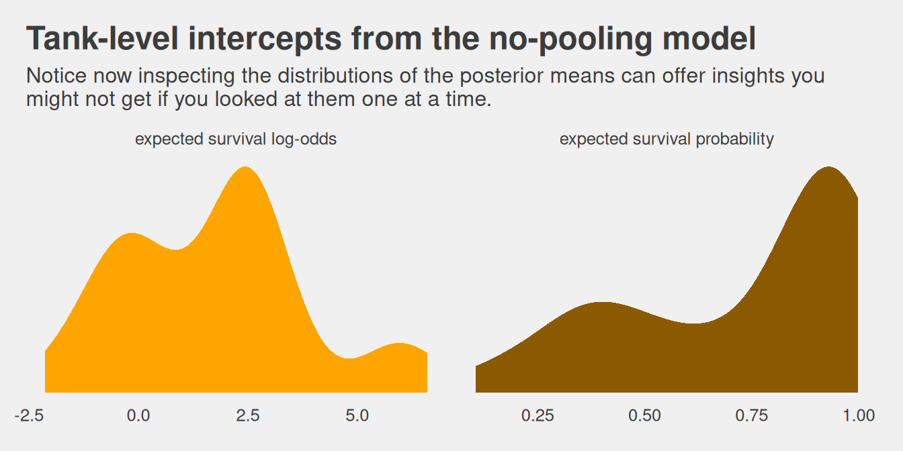
Even though it seems like we can derive important insights from how the tank-level intercepts are distributed, that information is not explicitly encoded in the statistical model. Keep that in mind as we now consider the multilevel alternative. Its formula is
\[\begin{align*} \text{surv}_i & \sim \operatorname{Binomial}(n_i, p_i) \\ \operatorname{logit}(p_i) & = \alpha_{\text{tank}_i} \\ \alpha_\text{tank} & \sim \operatorname{Normal}(\color{blue}\alpha, \color{blue}\sigma) \\ \color{blue}\alpha & \color{blue}\sim \color{blue}{\operatorname{Normal}(0, 1)} \\ \color{blue}\sigma & \color{blue}\sim \color{blue}{\operatorname{HalfCauchy}(0, 1)}. \end{align*}\]
The Gaussian distribution with mean \(\alpha\) and standard deviation \(\sigma\) is the prior for each tank’s intercept. But that prior itself has priors for \(\alpha\) and \(\sigma\). So there are two levels in the model, each resembling a simpler model. (p. 359, emphasis in the original)
You specify the corresponding multilevel model like this.
b12.2 <- brm(
data = d,
family = binomial,
surv | trials(density) ~ 1 + (1 | tank),
prior = c(
prior(normal(0, 1), class = Intercept),
prior(cauchy(0, 1), class = sd)
),
iter = 4000,
warmup = 1000,
chains = 4,
cores = 4,
seed = 12,
file = "fits/b12.02"
)Compiling Stan program...Start samplingThe syntax for the varying effects follows the lme4 style, ( <varying parameter(s)> | <grouping variable(s)> ). In this case (1 | tank) indicates only the intercept, 1, varies by tank. The extent to which parameters vary is controlled by the prior, prior(cauchy(0, 1), class = sd), which is parameterized in the standard deviation metric. Do note that last part. It’s common in multilevel software to model in the variance metric, instead. For technical reasons we won’t really get into until Chapter 13, Stan parameterizes this as a standard deviation.
Let’s perform the WAIC comparisons.
b12.1 <- add_criterion(b12.1, criterion = "waic")Warning:
43 (89.6%) p_waic estimates greater than 0.4. We recommend trying loo instead.b12.2 <- add_criterion(b12.2, criterion = "waic")Warning:
25 (52.1%) p_waic estimates greater than 0.4. We recommend trying loo instead.w <- loo_compare(b12.1, b12.2, criterion = "waic")
print(w, simplify = F) elpd_diff se_diff elpd_waic se_elpd_waic p_waic se_p_waic waic se_waic
b12.2 0.0 0.0 -100.1 3.7 21.0 0.8 200.2 7.3
b12.1 -0.3 2.2 -100.4 4.7 22.4 0.6 200.8 9.4 The se_diff is large relative to the elpd_diff. If we convert the \(\text{elpd}\) difference to the WAIC metric, the message stays the same.
cbind(waic_diff = w[, 1] * -2, se = w[, 2] * 2) waic_diff se
b12.2 0.0000000 0.000000
b12.1 0.5696527 4.381905Here are the WAIC weights.
model_weights(b12.1, b12.2, weights = "waic") %>%
round(digits = 2)b12.1 b12.2
0.43 0.57 Let’s check he model summary.
print(b12.2) Family: binomial
Links: mu = logit
Formula: surv | trials(density) ~ 1 + (1 | tank)
Data: d (Number of observations: 48)
Draws: 4 chains, each with iter = 4000; warmup = 1000; thin = 1;
total post-warmup draws = 12000
Multilevel Hyperparameters:
~tank (Number of levels: 48)
Estimate Est.Error l-95% CI u-95% CI Rhat Bulk_ESS Tail_ESS
sd(Intercept) 1.62 0.22 1.25 2.10 1.00 2874 5506
Regression Coefficients:
Estimate Est.Error l-95% CI u-95% CI Rhat Bulk_ESS Tail_ESS
Intercept 1.30 0.25 0.83 1.81 1.00 2267 3852
Draws were sampled using sampling(NUTS). For each parameter, Bulk_ESS
and Tail_ESS are effective sample size measures, and Rhat is the potential
scale reduction factor on split chains (at convergence, Rhat = 1).This time we don’t get a list of 48 separate tank-level parameters. However, we do get a description of their distribution interns of a mean (i.e., Intercept) and standard deviation (i.e., sd(Intercept)). If you’d like the actual tank-level parameters, don’t worry; they’re coming in Figure 12.1. We’ll need to do a little prep work, though.
post <- as_draws_df(b12.2)
post_mdn <- tibble(Estimate = coef(b12.2, robust = T)$tank[, "Estimate", ]) %>%
mutate(post_mdn = plogis(Estimate)) %>%
bind_cols(d)
post_mdn# A tibble: 48 × 8
Estimate post_mdn density pred size surv propsurv tank
<dbl> <dbl> <int> <fct> <fct> <int> <dbl> <int>
1 2.07 0.888 10 no big 9 0.9 1
2 2.95 0.950 10 no big 10 1 2
3 0.956 0.722 10 no big 7 0.7 3
4 2.95 0.950 10 no big 10 1 4
5 2.06 0.887 10 no small 9 0.9 5
6 2.05 0.886 10 no small 9 0.9 6
7 2.96 0.951 10 no small 10 1 7
8 2.04 0.885 10 no small 9 0.9 8
9 -0.171 0.457 10 pred big 4 0.4 9
10 2.06 0.887 10 pred big 9 0.9 10
# ℹ 38 more rowsHere’s the ggplot2 code to reproduce Figure 12.1.
post_mdn %>%
ggplot(aes(x = tank)) +
geom_hline(
yintercept = plogis(median(post$b_Intercept)),
linetype = 2,
linewidth = 1 / 4,
color = ggthemes_data[["fivethirtyeight"]][1, 2] %>% pull()
) +
geom_vline(
xintercept = c(16.5, 32.5),
linewidth = 1,
color = ggthemes_data[["fivethirtyeight"]][2, 2] %>% pull()
) +
geom_point(aes(y = propsurv), color = "orange2") +
geom_point(aes(y = post_mdn), shape = 1) +
annotate(
geom = "text",
x = c(8, 16 + 8, 32 + 8),
y = 0,
label = c("small tanks", "medium tanks", "large tanks")
) +
scale_x_continuous(breaks = c(1, 16, 32, 48)) +
labs(
title = "Multilevel shrinkage!",
subtitle = "The empirical proportions are in orange while the model-\nimplied proportions are the black circles. The dashed line is\nthe model-implied average survival proportion."
) +
coord_cartesian(ylim = c(0, 1)) +
theme_fivethirtyeight() +
theme(panel.grid.major = element_blank())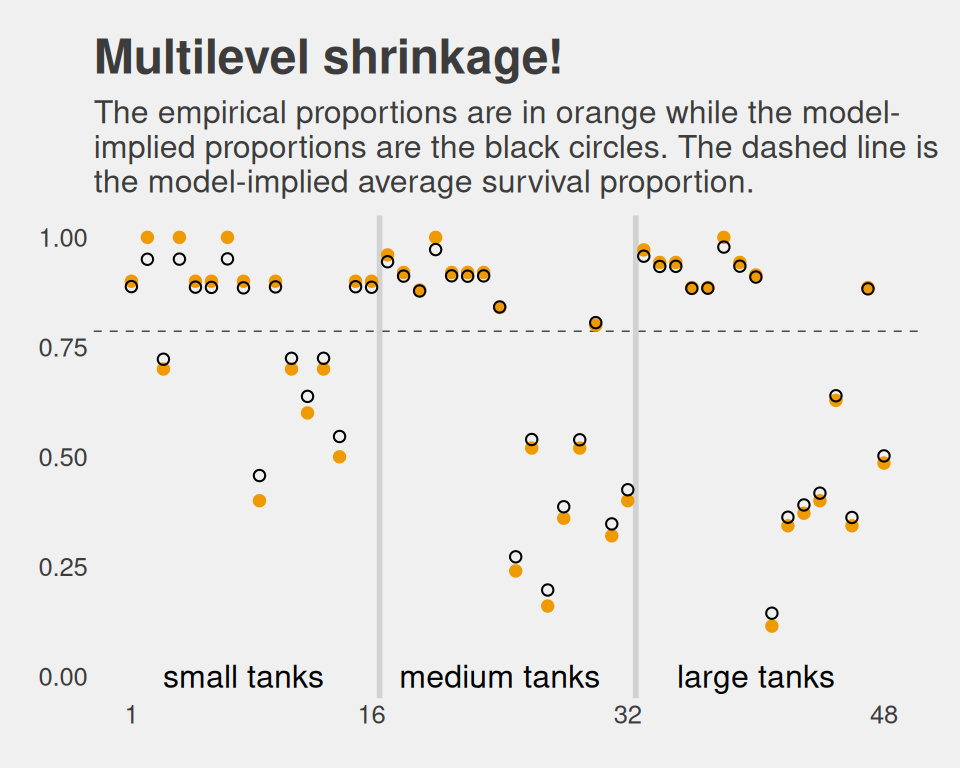
Here is the code for our version of Figure 12.2.a, where we visualize the model-implied population distribution of log-odds survival (i.e., the population distribution yielding all the tank-level intercepts).
# this makes the output of `slice_sample()` reproducible
set.seed(12)
p1 <- post %>%
slice_sample(n = 100) %>%
expand_grid(x = seq(from = -4, to = 5, length.out = 100)) %>%
ggplot(aes(x = x, group = .draw)) +
geom_line(
aes(y = dnorm(x, b_Intercept, sd_tank__Intercept)),
alpha = .2,
color = "orange2"
) +
scale_y_continuous(NULL, breaks = NULL) +
labs(
title = "Population survival distribution",
subtitle = "log-odds scale"
) +
coord_cartesian(xlim = c(-3, 4))Now we make our Figure 12.2.b and then bind the two subplots with patchwork.
p2 <- ggplot(
data = post,
aes(
x = rnorm(n = nrow(post), mean = b_Intercept, sd = sd_tank__Intercept) %>%
plogis()
)
) +
geom_density(linewidth = 0, fill = "orange2") +
scale_y_continuous(NULL, breaks = NULL) +
labs(
title = "Probability of survival",
subtitle = "transformed by the inverse-logit function"
)
library(patchwork)
(p1 + p2) &
theme_fivethirtyeight() &
theme(
plot.title = element_text(size = 12),
plot.subtitle = element_text(size = 10)
)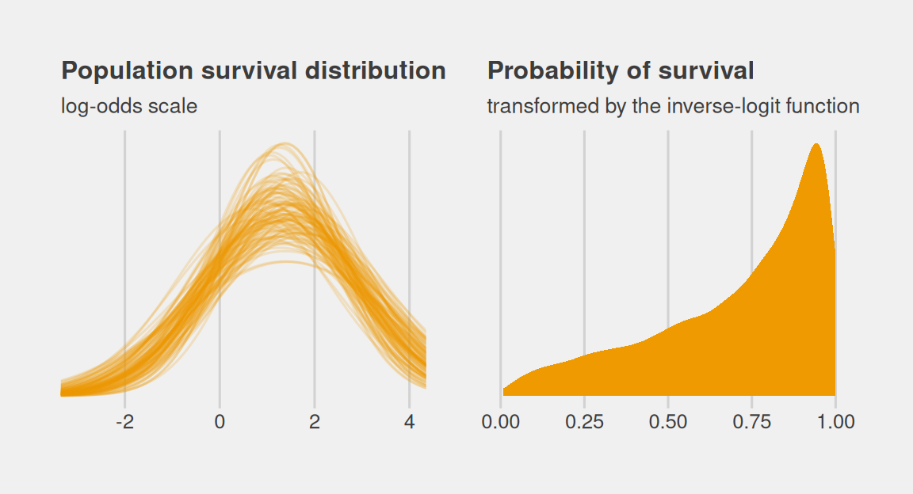
In the left plot, notice the uncertainty in terms of both location \(\alpha\) and scale \(\sigma\). For both pots, note how we sampled 12,000 imaginary tanks rather than McElreath’s 8,000. This is because we had 12,000 HMC iterations (i.e., execute nrow(post)).
The aes() code in that last block was a bit much. To get a sense of how it worked, consider this.
set.seed(12)
rnorm(n = 1, mean = post$b_Intercept, sd = post$sd_tank__Intercept) %>%
plogis()[1] 0.3460963First, we took one random draw from a normal distribution with a mean of the first row in post$b_Intercept and a standard deviation of the value from the first row in post$sd_tank__Intercept, and passed it through the plogis() function. By replacing the 1 with nrow(post), we do this nrow(post) times (i.e., 12,000). Our orange density, then, is the summary of that process.
12.1.0.1 Rethinking: Varying intercepts as over-dispersion
In the previous chapter (Section 11.3), the beta-binomial and gamma-Poisson models were presented as ways for coping with over-dispersion of count data. Varying intercepts accomplish the same thing, allowing count outcomes to be over-dispersed. They accomplish this, because when each observed count gets its own unique intercept, but these intercepts are pooled through a common distribution, the predictions expect over-dispersion just like a beta-binomial or gamma-Poisson model would. Compared to a beta-binomial or gamma-Poisson model, a binomial or Poisson model with a varying intercept on every observed outcome will often be easier to estimate and easier to extend. (p. 363, emphasis in the original)
12.1.0.2 Overthinking: Prior for variance components
Yep, you can use the exponential distribution for your priors in brms, too. Here it is for model b12.2.
b12.2b <- update(
b12.2,
prior = c(
prior(normal(0, 1), class = Intercept),
prior(exponential(1), class = sd)
),
seed = 12,
file = "fits/b12.02b"
)The desired updates require recompiling the modelCompiling Stan program...Start sampling
SAMPLING FOR MODEL 'anon_model' NOW (CHAIN 1).
Chain 1:
Chain 1: Gradient evaluation took 2.7e-05 seconds
Chain 1: 1000 transitions using 10 leapfrog steps per transition would take 0.27 seconds.
Chain 1: Adjust your expectations accordingly!
Chain 1:
Chain 1:
Chain 1: Iteration: 1 / 4000 [ 0%] (Warmup)
Chain 1: Iteration: 400 / 4000 [ 10%] (Warmup)
Chain 1: Iteration: 800 / 4000 [ 20%] (Warmup)
Chain 1: Iteration: 1001 / 4000 [ 25%] (Sampling)
Chain 1: Iteration: 1400 / 4000 [ 35%] (Sampling)
Chain 1: Iteration: 1800 / 4000 [ 45%] (Sampling)
Chain 1: Iteration: 2200 / 4000 [ 55%] (Sampling)
Chain 1: Iteration: 2600 / 4000 [ 65%] (Sampling)
Chain 1: Iteration: 3000 / 4000 [ 75%] (Sampling)
Chain 1: Iteration: 3400 / 4000 [ 85%] (Sampling)
Chain 1: Iteration: 3800 / 4000 [ 95%] (Sampling)
Chain 1: Iteration: 4000 / 4000 [100%] (Sampling)
Chain 1:
Chain 1: Elapsed Time: 0.202 seconds (Warm-up)
Chain 1: 0.484 seconds (Sampling)
Chain 1: 0.686 seconds (Total)
Chain 1:
SAMPLING FOR MODEL 'anon_model' NOW (CHAIN 2).
Chain 2:
Chain 2: Gradient evaluation took 1.3e-05 seconds
Chain 2: 1000 transitions using 10 leapfrog steps per transition would take 0.13 seconds.
Chain 2: Adjust your expectations accordingly!
Chain 2:
Chain 2:
Chain 2: Iteration: 1 / 4000 [ 0%] (Warmup)
Chain 2: Iteration: 400 / 4000 [ 10%] (Warmup)
Chain 2: Iteration: 800 / 4000 [ 20%] (Warmup)
Chain 2: Iteration: 1001 / 4000 [ 25%] (Sampling)
Chain 2: Iteration: 1400 / 4000 [ 35%] (Sampling)
Chain 2: Iteration: 1800 / 4000 [ 45%] (Sampling)
Chain 2: Iteration: 2200 / 4000 [ 55%] (Sampling)
Chain 2: Iteration: 2600 / 4000 [ 65%] (Sampling)
Chain 2: Iteration: 3000 / 4000 [ 75%] (Sampling)
Chain 2: Iteration: 3400 / 4000 [ 85%] (Sampling)
Chain 2: Iteration: 3800 / 4000 [ 95%] (Sampling)
Chain 2: Iteration: 4000 / 4000 [100%] (Sampling)
Chain 2:
Chain 2: Elapsed Time: 0.209 seconds (Warm-up)
Chain 2: 0.485 seconds (Sampling)
Chain 2: 0.694 seconds (Total)
Chain 2:
SAMPLING FOR MODEL 'anon_model' NOW (CHAIN 3).
Chain 3:
Chain 3: Gradient evaluation took 1.3e-05 seconds
Chain 3: 1000 transitions using 10 leapfrog steps per transition would take 0.13 seconds.
Chain 3: Adjust your expectations accordingly!
Chain 3:
Chain 3:
Chain 3: Iteration: 1 / 4000 [ 0%] (Warmup)
Chain 3: Iteration: 400 / 4000 [ 10%] (Warmup)
Chain 3: Iteration: 800 / 4000 [ 20%] (Warmup)
Chain 3: Iteration: 1001 / 4000 [ 25%] (Sampling)
Chain 3: Iteration: 1400 / 4000 [ 35%] (Sampling)
Chain 3: Iteration: 1800 / 4000 [ 45%] (Sampling)
Chain 3: Iteration: 2200 / 4000 [ 55%] (Sampling)
Chain 3: Iteration: 2600 / 4000 [ 65%] (Sampling)
Chain 3: Iteration: 3000 / 4000 [ 75%] (Sampling)
Chain 3: Iteration: 3400 / 4000 [ 85%] (Sampling)
Chain 3: Iteration: 3800 / 4000 [ 95%] (Sampling)
Chain 3: Iteration: 4000 / 4000 [100%] (Sampling)
Chain 3:
Chain 3: Elapsed Time: 0.197 seconds (Warm-up)
Chain 3: 0.492 seconds (Sampling)
Chain 3: 0.689 seconds (Total)
Chain 3:
SAMPLING FOR MODEL 'anon_model' NOW (CHAIN 4).
Chain 4:
Chain 4: Gradient evaluation took 1.4e-05 seconds
Chain 4: 1000 transitions using 10 leapfrog steps per transition would take 0.14 seconds.
Chain 4: Adjust your expectations accordingly!
Chain 4:
Chain 4:
Chain 4: Iteration: 1 / 4000 [ 0%] (Warmup)
Chain 4: Iteration: 400 / 4000 [ 10%] (Warmup)
Chain 4: Iteration: 800 / 4000 [ 20%] (Warmup)
Chain 4: Iteration: 1001 / 4000 [ 25%] (Sampling)
Chain 4: Iteration: 1400 / 4000 [ 35%] (Sampling)
Chain 4: Iteration: 1800 / 4000 [ 45%] (Sampling)
Chain 4: Iteration: 2200 / 4000 [ 55%] (Sampling)
Chain 4: Iteration: 2600 / 4000 [ 65%] (Sampling)
Chain 4: Iteration: 3000 / 4000 [ 75%] (Sampling)
Chain 4: Iteration: 3400 / 4000 [ 85%] (Sampling)
Chain 4: Iteration: 3800 / 4000 [ 95%] (Sampling)
Chain 4: Iteration: 4000 / 4000 [100%] (Sampling)
Chain 4:
Chain 4: Elapsed Time: 0.196 seconds (Warm-up)
Chain 4: 0.486 seconds (Sampling)
Chain 4: 0.682 seconds (Total)
Chain 4: The model summary:
print(b12.2b) Family: binomial
Links: mu = logit
Formula: surv | trials(density) ~ 1 + (1 | tank)
Data: d (Number of observations: 48)
Draws: 4 chains, each with iter = 4000; warmup = 1000; thin = 1;
total post-warmup draws = 12000
Multilevel Hyperparameters:
~tank (Number of levels: 48)
Estimate Est.Error l-95% CI u-95% CI Rhat Bulk_ESS Tail_ESS
sd(Intercept) 1.62 0.22 1.25 2.10 1.00 2893 4845
Regression Coefficients:
Estimate Est.Error l-95% CI u-95% CI Rhat Bulk_ESS Tail_ESS
Intercept 1.29 0.25 0.82 1.79 1.00 2516 4934
Draws were sampled using sampling(NUTS). For each parameter, Bulk_ESS
and Tail_ESS are effective sample size measures, and Rhat is the potential
scale reduction factor on split chains (at convergence, Rhat = 1).If you’re curious how the exponential prior compares to the posterior, you might just plot.
tibble(x = seq(from = 0, to = 6, by = 0.01)) %>%
ggplot() +
# the prior
geom_area(
aes(x = x, y = dexp(x, rate = 1)),
fill = "orange2",
alpha = 1 / 3
) +
# the posterior
geom_density(
data = as_draws_df(b12.2b),
aes(x = sd_tank__Intercept),
fill = "orange2",
linewidth = 0
) +
scale_y_continuous(NULL, breaks = NULL) +
labs(
title = "Bonus prior/posterior plot\nfor sd_tank__Intercept",
subtitle = "The prior is the semitransparent ramp in the\nbackground. The posterior is the solid orange\nmound."
) +
coord_cartesian(xlim = c(0, 5)) +
theme_fivethirtyeight()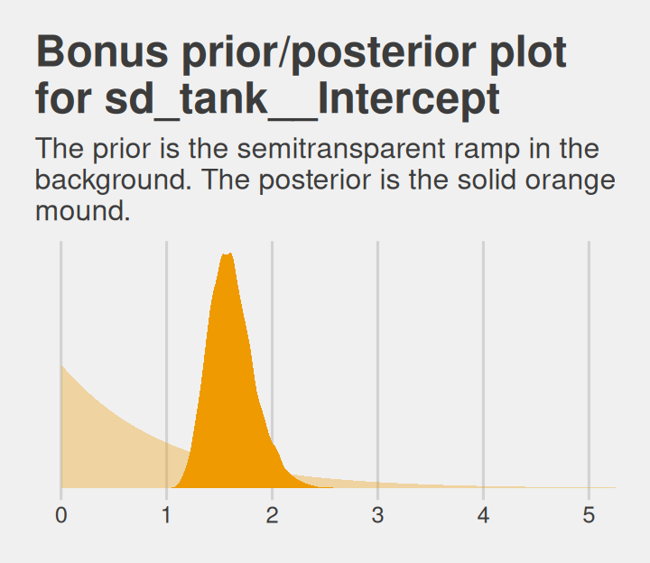
12.2 Varying effects and the underfitting/overfitting trade-off
Varying intercepts are just regularized estimates, but adaptively regularized by estimating how diverse the clusters are while estimating the features of each cluster. This fact is not easy to grasp….
A major benefit of using varying effects estimates, instead of the empirical raw estimates, is that they provide more accurate estimates of the individual cluster (tank) intercepts. On average, the varying effects actually provide a better estimate of the individual tank (cluster) means. The reason that the varying intercepts provides better estimates is that they do a better job trading off underfitting and overfitting. (p. 364)
In this section, we explicate this by contrasting three perspectives:
- Complete pooling (i.e., a single-\(\alpha\) model)
- No pooling (i.e., the single-level \(\alpha_{\text{tank}_i}\) model)
- Partial pooling (i.e., the multilevel model for which \(\alpha_\text{tank} \sim \operatorname{Normal}(\alpha, \sigma)\))
To demonstrate [the magic of the multilevel model], we’ll simulate some tadpole data. That way, we’ll know the true per-pond survival probabilities. Then we can compare the no-pooling estimates to the partial pooling estimates, by computing how close each gets to the true values they are trying to estimate. The rest of this section shows how to do such a simulation. (p. 365)
12.2.1 The model
The simulation formula should look familiar.
\[\begin{align*} \text{surv}_i & \sim \operatorname{Binomial}(n_i, p_i) \\ \operatorname{logit}(p_i) & = \alpha_{\text{pond}_i} \\ \alpha_{\text{pond}} & \sim \operatorname{Normal}(\alpha, \sigma) \\ \alpha & \sim \operatorname{Normal}(0, 1) \\ \sigma & \sim \operatorname{HalfCauchy}(0, 1) \end{align*}\]
12.2.2 Assign values to the parameters
Here we follow along with McElreath and “assign specific values representative of the actual tadpole data” (p. 366). However, our values will differ a little from his. Because he did not show a set.seed() line, we don’t know what seed was used to generate pseudo random draws from the rnorm() function.
a <- 1.4
sigma <- 1.5
n_ponds <- 60
set.seed(12)
dsim <- tibble(
pond = 1:n_ponds,
ni = rep(c(5, 10, 25, 35), each = n_ponds / 4) %>% as.integer(),
true_a = rnorm(n = n_ponds, mean = a, sd = sigma)
)
head(dsim)# A tibble: 6 × 3
pond ni true_a
<int> <int> <dbl>
1 1 5 -0.821
2 2 5 3.77
3 3 5 -0.0351
4 4 5 0.0200
5 5 5 -1.60
6 6 5 0.992 McElreath twice urged us to inspect the contents of the simulation. In addition to looking at the data with head(), we might well plot.
library(tidybayes)
dsim %>%
mutate(ni = factor(ni)) %>%
ggplot(aes(x = true_a, y = ni)) +
stat_halfeye(.width = .5, fill = "orange2") +
ggtitle("Log-odds varying by # tadpoles per pond") +
theme_fivethirtyeight() +
theme(plot.title = element_text(size = 14))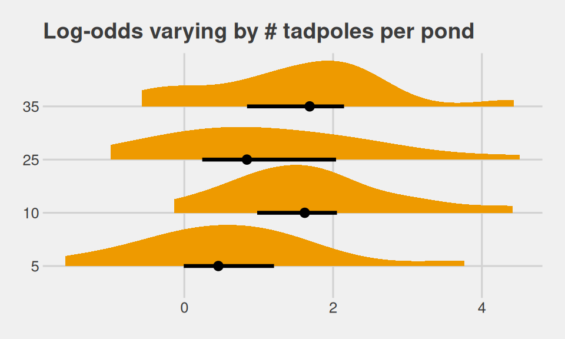
12.2.3 Sumulate survivors
Each pond \(i\) has \(n_i\) potential survivors, and nature flips each tadpole’s coin, so to speak, with probability of survival \(p_i\). This probability \(p_i\) is implied by the model definition, and is equal to:
\[p_i = \frac{\exp (\alpha_i)}{1 + \exp (\alpha_i)}\]
The model uses a logit link, and so the probability is defined by the [
plogis()] function. (p. 367)
set.seed(12)
(dsim <- dsim %>%
mutate(si = rbinom(n = n(), prob = plogis(true_a), size = ni)))# A tibble: 60 × 4
pond ni true_a si
<int> <int> <dbl> <int>
1 1 5 -0.821 0
2 2 5 3.77 5
3 3 5 -0.0351 4
4 4 5 0.0200 3
5 5 5 -1.60 0
6 6 5 0.992 5
7 7 5 0.927 5
8 8 5 0.458 3
9 9 5 1.24 5
10 10 5 2.04 5
# ℹ 50 more rows12.2.4 Compute the no-pooling estimates
The no-pooling estimates (i.e., \(\alpha_{\text{tank}_i}\)) are the results of simple algebra.
(dsim <- dsim %>%
mutate(p_nopool = si / ni))# A tibble: 60 × 5
pond ni true_a si p_nopool
<int> <int> <dbl> <int> <dbl>
1 1 5 -0.821 0 0
2 2 5 3.77 5 1
3 3 5 -0.0351 4 0.8
4 4 5 0.0200 3 0.6
5 5 5 -1.60 0 0
6 6 5 0.992 5 1
7 7 5 0.927 5 1
8 8 5 0.458 3 0.6
9 9 5 1.24 5 1
10 10 5 2.04 5 1
# ℹ 50 more rows“These are the same no-pooling estimates you’d get by fitting a model with a dummy variable for each pond and flat priors that induce no regularization” (p. 367). That is, these are the same kinds of estimates we got back when we fit b12.1.
12.2.5 Compute the partial-pooling estimates
To follow along with McElreath, set chains = 1, cores = 1 to fit with one chain.
b12.3 <- brm(
data = dsim,
family = binomial,
si | trials(ni) ~ 1 + (1 | pond),
prior = c(
prior(normal(0, 1), class = Intercept),
prior(cauchy(0, 1), class = sd)
),
iter = 10000,
warmup = 1000,
chains = 1,
cores = 1,
seed = 12,
file = "fits/b12.03"
)Compiling Stan program...Start sampling
SAMPLING FOR MODEL 'anon_model' NOW (CHAIN 1).
Chain 1:
Chain 1: Gradient evaluation took 2.7e-05 seconds
Chain 1: 1000 transitions using 10 leapfrog steps per transition would take 0.27 seconds.
Chain 1: Adjust your expectations accordingly!
Chain 1:
Chain 1:
Chain 1: Iteration: 1 / 10000 [ 0%] (Warmup)
Chain 1: Iteration: 1000 / 10000 [ 10%] (Warmup)
Chain 1: Iteration: 1001 / 10000 [ 10%] (Sampling)
Chain 1: Iteration: 2000 / 10000 [ 20%] (Sampling)
Chain 1: Iteration: 3000 / 10000 [ 30%] (Sampling)
Chain 1: Iteration: 4000 / 10000 [ 40%] (Sampling)
Chain 1: Iteration: 5000 / 10000 [ 50%] (Sampling)
Chain 1: Iteration: 6000 / 10000 [ 60%] (Sampling)
Chain 1: Iteration: 7000 / 10000 [ 70%] (Sampling)
Chain 1: Iteration: 8000 / 10000 [ 80%] (Sampling)
Chain 1: Iteration: 9000 / 10000 [ 90%] (Sampling)
Chain 1: Iteration: 10000 / 10000 [100%] (Sampling)
Chain 1:
Chain 1: Elapsed Time: 0.219 seconds (Warm-up)
Chain 1: 1.74 seconds (Sampling)
Chain 1: 1.959 seconds (Total)
Chain 1: Here’s our standard brms summary.
print(b12.3) Family: binomial
Links: mu = logit
Formula: si | trials(ni) ~ 1 + (1 | pond)
Data: dsim (Number of observations: 60)
Draws: 1 chains, each with iter = 10000; warmup = 1000; thin = 1;
total post-warmup draws = 9000
Multilevel Hyperparameters:
~pond (Number of levels: 60)
Estimate Est.Error l-95% CI u-95% CI Rhat Bulk_ESS Tail_ESS
sd(Intercept) 1.30 0.19 0.97 1.71 1.00 3287 4775
Regression Coefficients:
Estimate Est.Error l-95% CI u-95% CI Rhat Bulk_ESS Tail_ESS
Intercept 1.28 0.20 0.90 1.68 1.00 3642 4930
Draws were sampled using sampling(NUTS). For each parameter, Bulk_ESS
and Tail_ESS are effective sample size measures, and Rhat is the potential
scale reduction factor on split chains (at convergence, Rhat = 1).I’m not aware that you can use McElreath’s depth=2 trick in brms for summary() or print(). But can get most of that information and more with the Stan-like summary using the $fit syntax.
b12.3$fitInference for Stan model: anon_model.
1 chains, each with iter=10000; warmup=1000; thin=1;
post-warmup draws per chain=9000, total post-warmup draws=9000.
mean se_mean sd 2.5% 25% 50% 75% 97.5% n_eff Rhat
b_Intercept 1.28 0.00 0.20 0.90 1.15 1.28 1.41 1.68 3640 1
sd_pond__Intercept 1.30 0.00 0.19 0.97 1.16 1.28 1.41 1.71 3248 1
Intercept 1.28 0.00 0.20 0.90 1.15 1.28 1.41 1.68 3640 1
r_pond[1,Intercept] -2.34 0.01 0.87 -4.21 -2.87 -2.29 -1.75 -0.75 12481 1
r_pond[2,Intercept] 1.03 0.01 1.00 -0.74 0.33 0.97 1.68 3.15 14290 1
r_pond[3,Intercept] 0.19 0.01 0.88 -1.43 -0.41 0.15 0.74 2.02 16890 1
r_pond[4,Intercept] -0.52 0.01 0.80 -2.07 -1.05 -0.53 0.00 1.11 18551 1
r_pond[5,Intercept] -2.35 0.01 0.90 -4.25 -2.91 -2.30 -1.74 -0.71 12869 1
r_pond[6,Intercept] 1.03 0.01 1.00 -0.78 0.34 0.97 1.66 3.18 15182 1
r_pond[7,Intercept] 1.02 0.01 0.99 -0.75 0.33 0.96 1.64 3.10 12727 1
r_pond[8,Intercept] -0.52 0.01 0.83 -2.09 -1.08 -0.53 0.02 1.16 17949 1
r_pond[9,Intercept] 1.01 0.01 0.99 -0.75 0.31 0.96 1.64 3.10 16186 1
r_pond[10,Intercept] 1.02 0.01 1.02 -0.80 0.32 0.96 1.68 3.17 14285 1
r_pond[11,Intercept] -0.51 0.01 0.81 -2.07 -1.06 -0.53 0.04 1.13 17357 1
r_pond[12,Intercept] -0.52 0.01 0.80 -2.05 -1.05 -0.53 0.00 1.11 19244 1
r_pond[13,Intercept] -0.52 0.01 0.81 -2.08 -1.06 -0.53 0.02 1.14 17308 1
r_pond[14,Intercept] 0.17 0.01 0.89 -1.42 -0.44 0.13 0.74 2.00 17223 1
r_pond[15,Intercept] 0.17 0.01 0.85 -1.41 -0.40 0.13 0.71 1.94 16391 1
r_pond[16,Intercept] -0.65 0.01 0.62 -1.86 -1.08 -0.66 -0.24 0.58 14910 1
r_pond[17,Intercept] 1.41 0.01 0.93 -0.24 0.78 1.35 1.97 3.47 15655 1
r_pond[18,Intercept] 0.70 0.01 0.79 -0.73 0.16 0.67 1.19 2.35 16210 1
r_pond[19,Intercept] 0.71 0.01 0.80 -0.73 0.15 0.68 1.20 2.42 14986 1
r_pond[20,Intercept] 0.71 0.01 0.78 -0.70 0.17 0.66 1.21 2.34 15291 1
r_pond[21,Intercept] 0.69 0.01 0.78 -0.73 0.16 0.66 1.18 2.35 16440 1
r_pond[22,Intercept] 1.40 0.01 0.92 -0.19 0.76 1.33 1.97 3.36 12583 1
r_pond[23,Intercept] 1.42 0.01 0.94 -0.21 0.76 1.34 1.99 3.46 13204 1
r_pond[24,Intercept] -0.65 0.01 0.64 -1.86 -1.08 -0.67 -0.22 0.61 14322 1
r_pond[25,Intercept] -1.70 0.01 0.63 -2.97 -2.10 -1.69 -1.28 -0.49 12792 1
r_pond[26,Intercept] 0.16 0.01 0.70 -1.16 -0.31 0.13 0.61 1.62 16191 1
r_pond[27,Intercept] 0.18 0.01 0.71 -1.13 -0.31 0.14 0.63 1.65 15540 1
r_pond[28,Intercept] 0.70 0.01 0.79 -0.71 0.15 0.66 1.20 2.40 17771 1
r_pond[29,Intercept] 0.71 0.01 0.78 -0.70 0.16 0.67 1.21 2.37 14763 1
r_pond[30,Intercept] 0.18 0.01 0.71 -1.14 -0.31 0.15 0.63 1.64 14752 1
r_pond[31,Intercept] 1.42 0.01 0.71 0.19 0.93 1.38 1.86 2.93 13079 1
r_pond[32,Intercept] 1.43 0.01 0.71 0.17 0.94 1.38 1.87 2.99 12524 1
r_pond[33,Intercept] -1.08 0.00 0.43 -1.92 -1.37 -1.09 -0.79 -0.22 9367 1
r_pond[34,Intercept] -1.08 0.00 0.44 -1.95 -1.37 -1.07 -0.78 -0.24 9764 1
r_pond[35,Intercept] -0.44 0.00 0.46 -1.32 -0.75 -0.45 -0.13 0.49 10634 1
r_pond[36,Intercept] -1.08 0.00 0.43 -1.92 -1.38 -1.09 -0.79 -0.24 10531 1
r_pond[37,Intercept] 0.39 0.00 0.54 -0.60 0.02 0.37 0.73 1.48 13583 1
r_pond[38,Intercept] -0.93 0.00 0.43 -1.78 -1.22 -0.93 -0.63 -0.08 10504 1
r_pond[39,Intercept] 1.42 0.01 0.71 0.17 0.92 1.36 1.86 2.95 13030 1
r_pond[40,Intercept] -1.38 0.00 0.42 -2.21 -1.66 -1.38 -1.10 -0.55 9491 1
r_pond[41,Intercept] 0.15 0.00 0.51 -0.80 -0.20 0.14 0.48 1.18 12228 1
r_pond[42,Intercept] -1.39 0.00 0.44 -2.27 -1.67 -1.38 -1.09 -0.55 9988 1
r_pond[43,Intercept] -0.06 0.00 0.48 -0.98 -0.39 -0.07 0.25 0.93 11724 1
r_pond[44,Intercept] -2.37 0.01 0.49 -3.38 -2.69 -2.36 -2.03 -1.46 9399 1
r_pond[45,Intercept] -0.61 0.00 0.44 -1.48 -0.91 -0.62 -0.33 0.30 10745 1
r_pond[46,Intercept] 1.29 0.01 0.60 0.21 0.87 1.26 1.67 2.57 11850 1
r_pond[47,Intercept] -1.35 0.00 0.38 -2.11 -1.60 -1.35 -1.09 -0.63 8709 1
r_pond[48,Intercept] 1.29 0.01 0.62 0.18 0.87 1.26 1.68 2.61 12670 1
r_pond[49,Intercept] 1.69 0.01 0.69 0.47 1.21 1.64 2.11 3.19 11433 1
r_pond[50,Intercept] -0.80 0.00 0.39 -1.56 -1.05 -0.80 -0.54 -0.02 8936 1
r_pond[51,Intercept] 0.14 0.00 0.44 -0.70 -0.16 0.13 0.43 1.03 10636 1
r_pond[52,Intercept] 0.14 0.00 0.45 -0.71 -0.17 0.12 0.43 1.05 9941 1
r_pond[53,Intercept] 0.98 0.01 0.57 -0.04 0.59 0.96 1.34 2.20 11461 1
r_pond[54,Intercept] 2.20 0.01 0.81 0.81 1.64 2.13 2.68 4.01 11064 1
r_pond[55,Intercept] -1.36 0.00 0.38 -2.13 -1.61 -1.35 -1.10 -0.62 8394 1
r_pond[56,Intercept] 0.31 0.00 0.45 -0.55 0.01 0.30 0.60 1.24 10731 1
r_pond[57,Intercept] 0.73 0.00 0.52 -0.22 0.37 0.71 1.06 1.84 10987 1
r_pond[58,Intercept] -1.69 0.00 0.40 -2.49 -1.95 -1.69 -1.42 -0.92 8154 1
r_pond[59,Intercept] -0.31 0.00 0.41 -1.11 -0.60 -0.32 -0.04 0.51 9223 1
r_pond[60,Intercept] 0.14 0.00 0.45 -0.68 -0.16 0.13 0.43 1.04 10559 1
lprior -3.19 0.01 0.34 -3.94 -3.39 -3.16 -2.96 -2.61 3672 1
lp__ -190.20 0.18 7.82 -206.25 -195.30 -189.85 -184.72 -175.87 1929 1
Samples were drawn using NUTS(diag_e) at Mon Nov 16 09:09:56 2026.
For each parameter, n_eff is a crude measure of effective sample size,
and Rhat is the potential scale reduction factor on split chains (at
convergence, Rhat=1).As an aside, notice how this summary still reports the old-style n_eff values, rather than the updated Bulk_ESS and Tail_ESS values. I suspect this will change sometime soon. In the meantime, here’s a thread on the Stan Forums featuring members of the Stan team discussing how.
Let’s get ready for the diagnostic plot of Figure 12.3. First we add the partially-pooled estimates, as summarized by their posterior means, to the dsim data. Then we compute error values.
# we could have included this step in the block of code below, if we wanted to
p_partpool <- tibble(Estimate = coef(b12.3)$pond[, "Estimate", ]) %>%
transmute(p_partpool = plogis(Estimate))
dsim <- dsim %>%
bind_cols(p_partpool) %>%
mutate(p_true = plogis(true_a)) %>%
mutate(
nopool_error = abs(p_nopool - p_true),
partpool_error = abs(p_partpool - p_true)
)
dsim %>%
glimpse()Rows: 60
Columns: 9
$ pond <int> 1, 2, 3, 4, 5, 6, 7, 8, 9, 10, 11, 12, 13, 14, 15, 16, 17, 18, 19, 20, 21, 22, 23, 24, 25, 26, 27, 28, 29…
$ ni <int> 5, 5, 5, 5, 5, 5, 5, 5, 5, 5, 5, 5, 5, 5, 5, 10, 10, 10, 10, 10, 10, 10, 10, 10, 10, 10, 10, 10, 10, 10, …
$ true_a <dbl> -0.82085139, 3.76575421, -0.03511672, 0.01999213, -1.59646315, 0.99155593, 0.92697693, 0.45761715, 1.2403…
$ si <int> 0, 5, 4, 3, 0, 5, 5, 3, 5, 5, 3, 3, 3, 4, 4, 6, 10, 9, 9, 9, 9, 10, 10, 6, 3, 8, 8, 9, 9, 8, 24, 24, 13, …
$ p_nopool <dbl> 0.00, 1.00, 0.80, 0.60, 0.00, 1.00, 1.00, 0.60, 1.00, 1.00, 0.60, 0.60, 0.60, 0.80, 0.80, 0.60, 1.00, 0.9…
$ p_partpool <dbl> 0.2568147, 0.9098514, 0.8119795, 0.6806386, 0.2551244, 0.9094408, 0.9087241, 0.6813532, 0.9080330, 0.9089…
$ p_true <dbl> 0.3055830, 0.9773737, 0.4912217, 0.5049979, 0.1684765, 0.7293951, 0.7164616, 0.6124487, 0.7756170, 0.8851…
$ nopool_error <dbl> 0.305582963, 0.022626343, 0.308778278, 0.095002134, 0.168476520, 0.270604861, 0.283538432, 0.012448745, 0…
$ partpool_error <dbl> 0.0487682354, 0.0675222773, 0.3207577892, 0.1756407331, 0.0866478573, 0.1800456386, 0.1922624952, 0.06890…Here is our code for Figure 12.3. The extra data processing for dfline is how we get the values necessary for the horizontal summary lines.
dfline <- dsim %>%
select(ni, nopool_error:partpool_error) %>%
gather(key, value, -ni) %>%
group_by(key, ni) %>%
summarise(mean_error = mean(value)) %>%
mutate(x = c(1, 16, 31, 46), xend = c(15, 30, 45, 60))
dsim %>%
ggplot(aes(x = pond)) +
geom_vline(
xintercept = c(15.5, 30.5, 45.4),
color = "white",
linewidth = 2 / 3
) +
geom_point(aes(y = nopool_error), color = "orange2") +
geom_point(aes(y = partpool_error), shape = 1) +
geom_segment(
data = dfline,
aes(x = x, xend = xend, y = mean_error, yend = mean_error),
color = rep(c("orange2", "black"), each = 4),
linetype = rep(1:2, each = 4)
) +
annotate(
"text",
x = c(15 - 7.5, 30 - 7.5, 45 - 7.5, 60 - 7.5),
y = .45,
label = c("tiny (5)", "small (10)", "medium (25)", "large (35)")
) +
scale_x_continuous(breaks = c(1, 10, 20, 30, 40, 50, 60)) +
labs(
title = "Estimate error by model type",
subtitle = "The horizontal axis displays pond number. The vertical axis measures\nthe absolute error in the predicted proportion of survivors, compared to\nthe true value used in the simulation. The higher the point, the worse\nthe estimate. No-pooling shown in orange. Partial pooling shown in black.\nThe orange and dashed black lines show the average error for each kind\nof estimate, across each initial density of tadpoles (pond size). Smaller\nponds produce more error, but the partial pooling estimates are better\non average, especially in smaller ponds.",
y = "absolute error"
) +
theme_fivethirtyeight() +
theme(
panel.grid.major = element_blank(),
plot.subtitle = element_text(size = 10)
)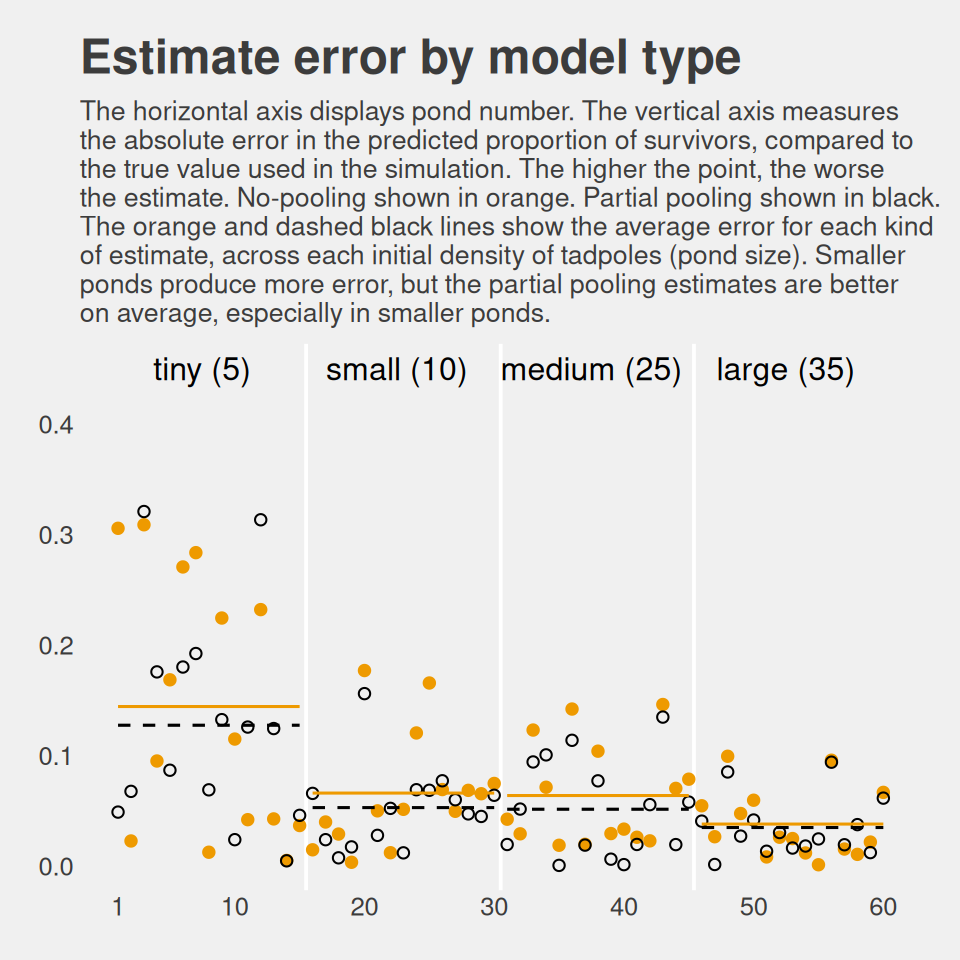
If you wanted to quantify the difference in simple summaries, you might do something like this.
dsim %>%
select(ni, nopool_error:partpool_error) %>%
gather(key, value, -ni) %>%
group_by(key) %>%
summarise(
mean_error = mean(value) %>% round(digits = 3),
median_error = median(value) %>% round(digits = 3)
)# A tibble: 2 × 3
key mean_error median_error
<chr> <dbl> <dbl>
1 nopool_error 0.078 0.05
2 partpool_error 0.067 0.05I originally learned about the multilevel in order to work with longitudinal data. In that context, I found the basic principles of a multilevel structure quite intuitive. The concept of partial pooling, however, took me some time to wrap my head around. If you’re struggling with this, be patient and keep chipping away.
When McElreath lectured on this topic in 2015, he traced partial pooling to statistician Charles M. Stein. In 1977, Efron and Morris wrote the now classic (1977) paper, Stein’s paradox in statistics, which does a nice job breaking down why partial pooling can be so powerful. One of the primary examples they used in the paper was of 1970 batting-average data. If you’d like more practice seeing how partial pooling works–or if you just like baseball–, check out my blog post, Stein’s paradox and what partial pooling can do for you.
12.2.5.1 Overthinking: Repeating the pond simulation
Within the brms workflow, we can reuse a compiled model with update(). But first, we’ll simulate new data.
a <- 1.4
sigma <- 1.5
n_ponds <- 60
set.seed(1999) # for new data, set a new seed
new_dsim <- tibble(
pond = 1:n_ponds,
ni = rep(c(5, 10, 25, 35), each = n_ponds / 4) %>% as.integer(),
true_a = rnorm(n = n_ponds, mean = a, sd = sigma)
) %>%
mutate(si = rbinom(n = n(), prob = plogis(true_a), size = ni)) %>%
mutate(p_nopool = si / ni)
glimpse(new_dsim)Rows: 60
Columns: 5
$ pond <int> 1, 2, 3, 4, 5, 6, 7, 8, 9, 10, 11, 12, 13, 14, 15, 16, 17, 18, 19, 20, 21, 22, 23, 24, 25, 26, 27, 28, 29, 30, …
$ ni <int> 5, 5, 5, 5, 5, 5, 5, 5, 5, 5, 5, 5, 5, 5, 5, 10, 10, 10, 10, 10, 10, 10, 10, 10, 10, 10, 10, 10, 10, 10, 25, 25…
$ true_a <dbl> 2.4990087, 1.3432554, 3.2045137, 3.6047030, 1.6005354, 2.1797409, 0.5759270, -0.3784119, -0.3209196, 3.1411130,…
$ si <int> 4, 4, 5, 4, 4, 4, 2, 4, 3, 5, 4, 5, 2, 2, 5, 10, 7, 10, 10, 8, 10, 9, 5, 10, 10, 6, 6, 7, 8, 5, 9, 22, 5, 25, 2…
$ p_nopool <dbl> 0.80, 0.80, 1.00, 0.80, 0.80, 0.80, 0.40, 0.80, 0.60, 1.00, 0.80, 1.00, 0.40, 0.40, 1.00, 1.00, 0.70, 1.00, 1.0…Fit the new model.
b12.3_new <- update(
b12.3,
newdata = new_dsim,
seed = 12,
file = "fits/b12.03_new"
)Start sampling
SAMPLING FOR MODEL 'anon_model' NOW (CHAIN 1).
Chain 1:
Chain 1: Gradient evaluation took 1.9e-05 seconds
Chain 1: 1000 transitions using 10 leapfrog steps per transition would take 0.19 seconds.
Chain 1: Adjust your expectations accordingly!
Chain 1:
Chain 1:
Chain 1: Iteration: 1 / 10000 [ 0%] (Warmup)
Chain 1: Iteration: 1000 / 10000 [ 10%] (Warmup)
Chain 1: Iteration: 1001 / 10000 [ 10%] (Sampling)
Chain 1: Iteration: 2000 / 10000 [ 20%] (Sampling)
Chain 1: Iteration: 3000 / 10000 [ 30%] (Sampling)
Chain 1: Iteration: 4000 / 10000 [ 40%] (Sampling)
Chain 1: Iteration: 5000 / 10000 [ 50%] (Sampling)
Chain 1: Iteration: 6000 / 10000 [ 60%] (Sampling)
Chain 1: Iteration: 7000 / 10000 [ 70%] (Sampling)
Chain 1: Iteration: 8000 / 10000 [ 80%] (Sampling)
Chain 1: Iteration: 9000 / 10000 [ 90%] (Sampling)
Chain 1: Iteration: 10000 / 10000 [100%] (Sampling)
Chain 1:
Chain 1: Elapsed Time: 0.219 seconds (Warm-up)
Chain 1: 1.69 seconds (Sampling)
Chain 1: 1.909 seconds (Total)
Chain 1: print(b12.3_new) Family: binomial
Links: mu = logit
Formula: si | trials(ni) ~ 1 + (1 | pond)
Data: new_dsim (Number of observations: 60)
Draws: 1 chains, each with iter = 10000; warmup = 1000; thin = 1;
total post-warmup draws = 9000
Multilevel Hyperparameters:
~pond (Number of levels: 60)
Estimate Est.Error l-95% CI u-95% CI Rhat Bulk_ESS Tail_ESS
sd(Intercept) 1.26 0.18 0.95 1.66 1.00 3244 4810
Regression Coefficients:
Estimate Est.Error l-95% CI u-95% CI Rhat Bulk_ESS Tail_ESS
Intercept 1.52 0.20 1.14 1.92 1.00 4392 5771
Draws were sampled using sampling(NUTS). For each parameter, Bulk_ESS
and Tail_ESS are effective sample size measures, and Rhat is the potential
scale reduction factor on split chains (at convergence, Rhat = 1).Why not plot the first simulation versus the second one?
bind_rows(as_draws_df(b12.3), as_draws_df(b12.3_new)) %>%
mutate(model = rep(c("b12.3", "b12.3_new"), each = n() / 2)) %>%
ggplot(aes(x = b_Intercept, y = sd_pond__Intercept)) +
stat_density_2d(
geom = "raster",
aes(fill = after_stat(density)),
contour = F,
n = 200
) +
geom_vline(xintercept = a, color = "orange3", linetype = 3) +
geom_hline(yintercept = sigma, color = "orange3", linetype = 3) +
scale_fill_gradient(low = "grey25", high = "orange3") +
ggtitle(
"Our simulation posteriors contrast a bit",
subtitle = expression(
alpha *
" is on the x and " *
sigma *
" is on the y, both in log-odds. The dotted lines intersect at the true values."
)
) +
coord_cartesian(xlim = c(.7, 2), ylim = c(.8, 1.9)) +
theme_fivethirtyeight() +
theme(legend.position = "none", panel.grid.major = element_blank()) +
facet_wrap(~model, ncol = 2)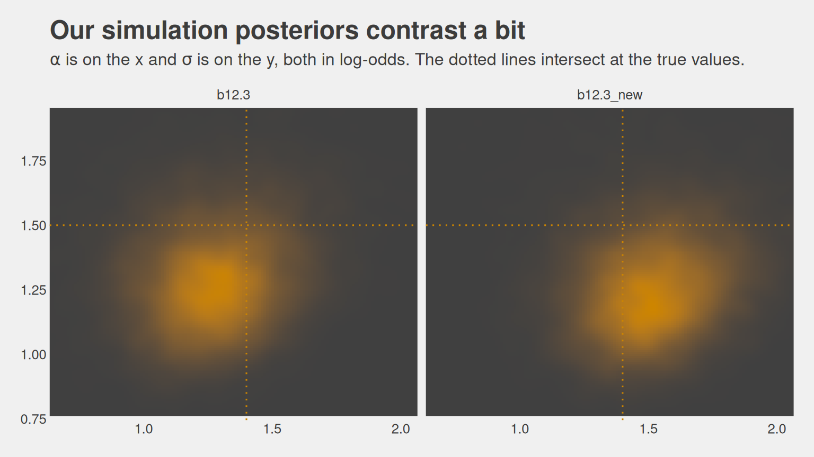
If you’d like the stanfit portion of your brm() object, subset with $fit. Take b12.3, for example. You might check out its structure via b12.3$fit %>% str(). Here’s the actual Stan code.
b12.3$fit@stanmodelS4 class stanmodel 'anon_model' coded as follows:
// generated with brms 2.23.0
functions {
}
data {
int<lower=1> N; // total number of observations
array[N] int Y; // response variable
array[N] int trials; // number of trials
// data for group-level effects of ID 1
int<lower=1> N_1; // number of grouping levels
int<lower=1> M_1; // number of coefficients per level
array[N] int<lower=1> J_1; // grouping indicator per observation
// group-level predictor values
vector[N] Z_1_1;
int prior_only; // should the likelihood be ignored?
}
transformed data {
}
parameters {
real Intercept; // temporary intercept for centered predictors
vector<lower=0>[M_1] sd_1; // group-level standard deviations
array[M_1] vector[N_1] z_1; // standardized group-level effects
}
transformed parameters {
vector[N_1] r_1_1; // actual group-level effects
// prior contributions to the log posterior
real lprior = 0;
r_1_1 = (sd_1[1] * (z_1[1]));
lprior += normal_lpdf(Intercept | 0, 1);
lprior += cauchy_lpdf(sd_1 | 0, 1)
- 1 * cauchy_lccdf(0 | 0, 1);
}
model {
// likelihood including constants
if (!prior_only) {
// initialize linear predictor term
vector[N] mu = rep_vector(0.0, N);
mu += Intercept;
for (n in 1:N) {
// add more terms to the linear predictor
mu[n] += r_1_1[J_1[n]] * Z_1_1[n];
}
target += binomial_logit_lpmf(Y | trials, mu);
}
// priors including constants
target += lprior;
target += std_normal_lpdf(z_1[1]);
}
generated quantities {
// actual population-level intercept
real b_Intercept = Intercept;
} And you can get the data of a given brm() fit object like so.
b12.3$data %>%
head() si ni pond
1 0 5 1
2 5 5 2
3 4 5 3
4 3 5 4
5 0 5 5
6 5 5 612.3 More than one type of cluster
“We can use and often should use more than one type of cluster in the same model” (p. 370).
12.3.0.1 Rethinking: Cross-classification and hierarchy
The kind of data structure in
data(chimpanzees)is usually called a cross-classified multilevel model. It is cross-classified, because actors are not nested within unique blocks. If each chimpanzee had instead done all of his or her pulls on a single day, within a single block, then the data structure would instead be hierarchical. (p. 371, emphasis in the original)
12.3.1 Multilevel chimpanzees
The initial multilevel update from model b10.4 from Section 10.1.1 follows the statistical formula
\[\begin{align*} \text{left\_pull}_i & \sim \operatorname{Binomial}(n_i = 1, p_i) \\ \operatorname{logit}(p_i) & = \alpha + \color{blue}{\alpha_{\text{actor}_i}} + (\beta_1 + \beta_2 \text{condition}_i) \text{prosoc\_left}_i \\ \color{blue}{\alpha_\text{actor}} & \color{blue}\sim \color{blue}{\operatorname{Normal}(0, \sigma_\text{actor})} \\ \alpha & \sim \operatorname{Normal}(0, 10) \\ \beta_1 & \sim \operatorname{Normal}(0, 10) \\ \beta_2 & \sim \operatorname{Normal}(0, 10) \\ \color{blue}{\sigma_\text{actor}} & \color{blue}\sim \color{blue}{\operatorname{HalfCauchy}(0, 1)}. \end{align*}\]
Notice that \(\alpha\) is inside the linear model, not inside the Gaussian prior for \(\alpha_\text{actor}\). This is mathematically equivalent to what [we] did with the tadpoles earlier in the chapter. You can always take the mean out of a Gaussian distribution and treat that distribution as a constant plus a Gaussian distribution centered on zero.
This might seem a little weird at first, so it might help train your intuition by experimenting in R. (p. 371)
Behold our two identical Gaussians in a tidy tibble.
set.seed(12)
two_gaussians <- tibble(
y1 = rnorm(n = 1e4, mean = 10, sd = 1),
y2 = 10 + rnorm(n = 1e4, mean = 0, sd = 1)
)Let’s follow McElreath’s advice to make sure they are same by superimposing the density of one on the other.
two_gaussians %>%
ggplot() +
geom_density(aes(x = y1), linewidth = 0, fill = "orange1", alpha = 1 / 3) +
geom_density(aes(x = y2), linewidth = 0, fill = "orange4", alpha = 1 / 3) +
scale_y_continuous(NULL, breaks = NULL) +
ggtitle("Our simulated Gaussians") +
theme_fivethirtyeight()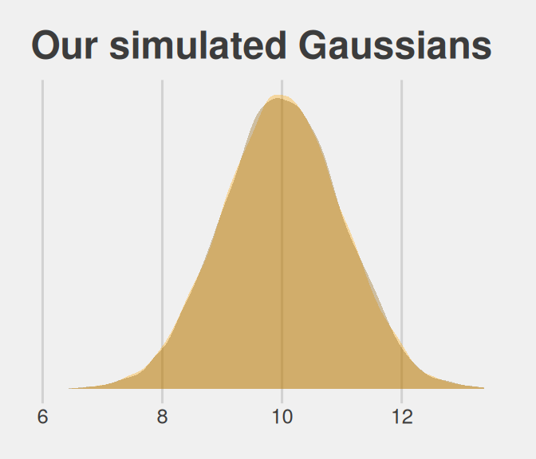
Yep, those Gaussians look about the same.
Let’s get the chimpanzees data from rethinking.
library(rethinking)
data(chimpanzees)
d <- chimpanzeesDetach rethinking and reload brms.
rm(chimpanzees)
detach(package:rethinking, unload = T)
library(brms)For our brms model with varying intercepts for actor but not block, we employ the pulled_left ~ 1 + ... + (1 | actor) syntax, specifically omitting a (1 | block) section.
b12.4 <- brm(
data = d,
family = binomial,
pulled_left | trials(1) ~ 1 +
prosoc_left +
prosoc_left:condition +
(1 | actor),
prior = c(
prior(normal(0, 10), class = Intercept),
prior(normal(0, 10), class = b),
prior(cauchy(0, 1), class = sd)
),
# I'm using 4 cores, instead of the `cores=3` in McElreath's code
iter = 5000,
warmup = 1000,
chains = 4,
cores = 4,
seed = 12,
file = "fits/b12.04"
)Only 2 levels detected so that family 'bernoulli' might be a more efficient choice.Compiling Stan program...Start samplingMcElreath encouraged us to inspect the trace plots. Here they are.
library(bayesplot)
color_scheme_set("orange")
post <- as_draws_df(b12.4)
post %>%
mcmc_trace(
pars = vars(b_Intercept:`r_actor[7,Intercept]`),
facet_args = list(ncol = 4)
) +
scale_x_continuous(breaks = 0:2 * 2000) +
theme_fivethirtyeight() +
theme(
legend.direction = "vertical",
legend.key.size = unit(0.5, "cm"),
legend.position = c(.96, .1)
)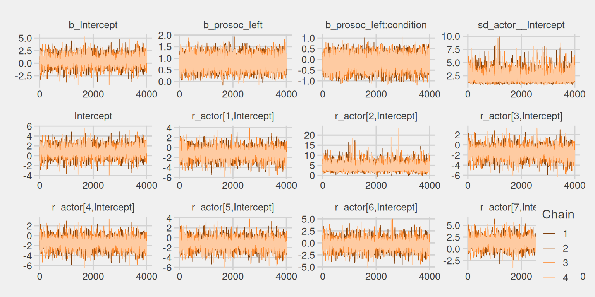
They look great. Here’s the posterior distribution for \(\sigma_\text{actor}\).
post %>%
ggplot(aes(x = sd_actor__Intercept, y = 0)) +
stat_halfeye(.width = .95, fill = "orange2") +
scale_y_continuous(NULL, breaks = NULL) +
ggtitle(expression(sigma[actor])) +
theme_fivethirtyeight()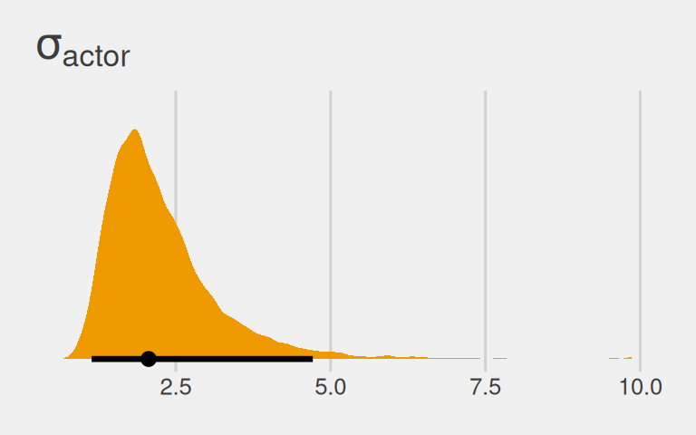
We can use the summarise_draws() function from the posterior package to compute the familiar diagnostic statistics for all parameters in the model.
library(posterior)
summarise_draws(b12.4)# A tibble: 14 × 10
variable mean median sd mad q5 q95 rhat ess_bulk ess_tail
<chr> <dbl> <dbl> <dbl> <dbl> <dbl> <dbl> <dbl> <dbl> <dbl>
1 b_Intercept 0.425 0.395 0.946 0.808 -1.03 1.99 1.00 2829. 3729.
2 b_prosoc_left 0.821 0.816 0.261 0.258 0.401 1.26 1.00 8138. 8328.
3 b_prosoc_left:condition -0.132 -0.130 0.298 0.293 -0.621 0.354 1.00 8502. 9293.
4 sd_actor__Intercept 2.28 2.06 0.950 0.699 1.24 4.04 1.00 3109. 3369.
5 Intercept 0.803 0.772 0.941 0.798 -0.638 2.37 1.00 2820. 3765.
6 r_actor[1,Intercept] -1.14 -1.10 0.962 0.829 -2.72 0.332 1.00 2895. 3924.
7 r_actor[2,Intercept] 4.19 3.92 1.65 1.34 2.10 7.20 1.00 5728. 6441.
8 r_actor[3,Intercept] -1.44 -1.41 0.970 0.834 -3.05 0.0458 1.00 2916. 3956.
9 r_actor[4,Intercept] -1.44 -1.41 0.965 0.836 -3.07 0.0364 1.00 2898. 3867.
10 r_actor[5,Intercept] -1.14 -1.11 0.965 0.844 -2.73 0.354 1.00 2872. 3999.
11 r_actor[6,Intercept] -0.194 -0.170 0.961 0.833 -1.76 1.27 1.00 2886. 3868.
12 r_actor[7,Intercept] 1.34 1.36 0.990 0.863 -0.255 2.90 1.00 3137. 4053.
13 lprior -11.9 -11.8 0.600 0.559 -13.0 -11.1 1.00 3099. 3425.
14 lp__ -283. -283. 2.82 2.70 -288. -279. 1.00 3405. 6579.Note how the last three columns are the rhat, the ess_bulk, and the ess_tail. Here we summarize those two effective sample size columns with histograms.
summarise_draws(b12.4) %>%
select(starts_with("ess")) %>%
gather() %>%
ggplot(aes(x = value)) +
geom_histogram(binwidth = 100, fill = "blue") +
xlim(0, NA) +
theme_fivethirtyeight() +
facet_wrap(~key)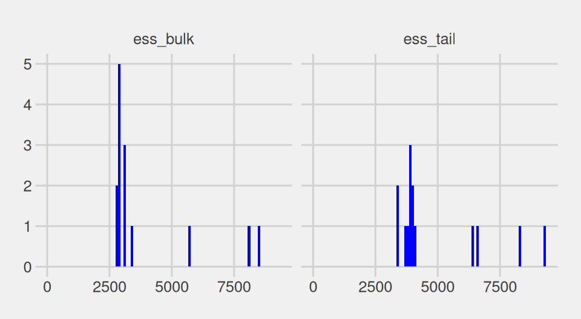
McElreath pointed out it’s important to understand the actor-level parameters, as in the summary above, are deviations from the grand mean. Here’s one way to add them together.
post %>%
select(starts_with("r_actor")) %>%
gather() %>%
# this is how we might add the grand mean to the actor-level deviations
mutate(value = value + post$b_Intercept) %>%
group_by(key) %>%
summarise(mean = mean(value) %>% round(digits = 2))# A tibble: 7 × 2
key mean
<chr> <dbl>
1 r_actor[1,Intercept] -0.71
2 r_actor[2,Intercept] 4.61
3 r_actor[3,Intercept] -1.02
4 r_actor[4,Intercept] -1.02
5 r_actor[5,Intercept] -0.71
6 r_actor[6,Intercept] 0.23
7 r_actor[7,Intercept] 1.76Here’s another way to get at the same information, this time using coef() and a little formatting help from the stringr::str_c() function. Just for kicks, we’ll throw in the 95% intervals, too.
coef(b12.4)$actor[, c(1, 3:4), 1] %>%
data.frame() %>%
round(digits = 2) %>%
# here we put the credible intervals in an APA-6-style format
mutate(
`95% CIs` = str_c("[", Q2.5, ", ", Q97.5, "]"),
actor = str_c("chimp #", 1:7)
) %>%
rename(mean = Estimate) %>%
select(actor, mean, `95% CIs`) %>%
knitr::kable()| actor | mean | 95% CIs |
|---|---|---|
| chimp #1 | -0.71 | [-1.24, -0.19] |
| chimp #2 | 4.61 | [2.54, 8.51] |
| chimp #3 | -1.02 | [-1.57, -0.48] |
| chimp #4 | -1.02 | [-1.58, -0.47] |
| chimp #5 | -0.71 | [-1.25, -0.19] |
| chimp #6 | 0.23 | [-0.29, 0.77] |
| chimp #7 | 1.76 | [1.06, 2.56] |
If you prefer the posterior median to the mean, just add a robust = T argument inside the coef() function.
12.3.2 Two types of cluster
The full cross-classified statistical model follows the form
\[\begin{align*} \text{left\_pull}_i & \sim \operatorname{Binomial}(n_i = 1, p_i) \\ \operatorname{logit}(p_i) & = \alpha + \alpha_{\text{actor}_i} + \color{blue}{\alpha_{\text{block}_i}} + (\beta_1 + \beta_2 \text{condition}_i) \text{prosoc\_left}_i \\ \alpha_{\text{actor}} & \sim \operatorname{Normal}(0, \sigma_{\text{actor}}) \\ \color{blue}{\alpha_{\text{block}}} & \color{blue}\sim \color{blue}{\operatorname{Normal}(0, \sigma_{\text{actor}})} \\ \alpha & \sim \operatorname{Normal}(0, 10) \\ \beta_1 & \sim \operatorname{Normal}(0, 10) \\ \beta_2 & \sim \operatorname{Normal}(0, 10) \\ \sigma_{\text{actor}} & \sim \operatorname{HalfCauchy}(0, 1) \\ \color{blue}{\sigma_{\text{block}}} & \color{blue}\sim \color{blue}{\operatorname{HalfCauchy}(0, 1)}. \end{align*}\]
Our brms model with varying intercepts for both actor and block now employs the ... (1 | actor) + (1 | block) syntax.
b12.5 <- update(
b12.4,
newdata = d,
formula = pulled_left | trials(1) ~ 1 +
prosoc_left +
prosoc_left:condition +
(1 | actor) +
(1 | block),
iter = 6000,
warmup = 1000,
cores = 4,
chains = 4,
control = list(adapt_delta = .85),
seed = 12,
file = "fits/b12.05"
)The desired updates require recompiling the modelOnly 2 levels detected so that family 'bernoulli' might be a more efficient choice.Compiling Stan program...Start samplingThis time we increased the adapt_delta parameter to .9 to avoid divergent transitions. We can look at the primary coefficients with print(). McElreath urged us again to inspect the trace plots.
post <- as_draws_df(b12.5)
post %>%
mcmc_trace(
pars = vars(b_Intercept:`r_block[6,Intercept]`),
facet_args = list(ncol = 4)
) +
scale_x_continuous(breaks = 0:2 * 2500) +
theme_fivethirtyeight() +
theme(legend.position = "none")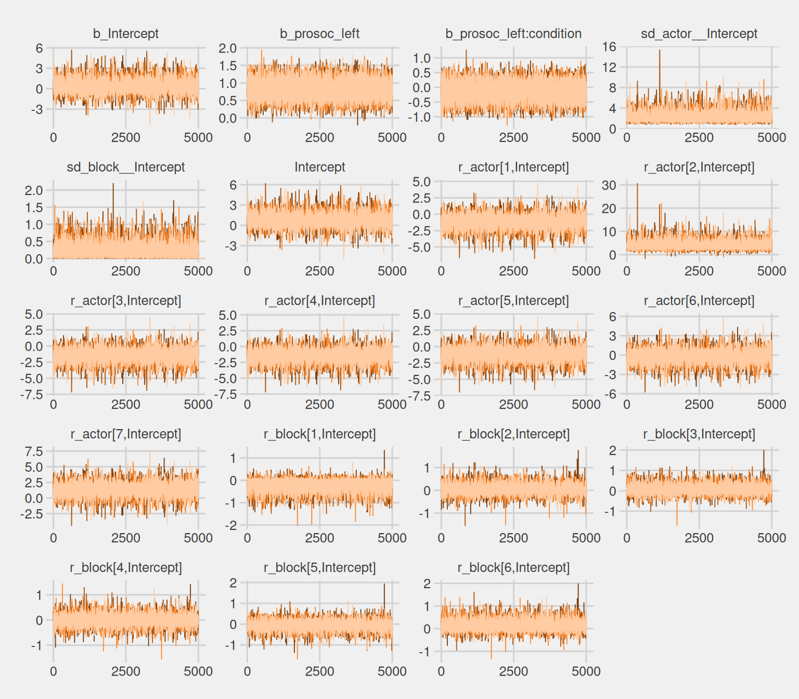
The trace plots look great. Here are the other diagnostics along with the parameter summaries, once again using summarise_draws().
summarise_draws(b12.5) %>%
select(-median, -mad) %>%
mutate_if(is.double, round, digits = 2)# A tibble: 21 × 8
variable mean sd q5 q95 rhat ess_bulk ess_tail
<chr> <dbl> <dbl> <dbl> <dbl> <dbl> <dbl> <dbl>
1 b_Intercept 0.43 0.97 -1.06 2.05 1 4636. 6581.
2 b_prosoc_left 0.83 0.26 0.4 1.25 1 16222. 13932.
3 b_prosoc_left:condition -0.14 0.3 -0.63 0.35 1 17119. 14483.
4 sd_actor__Intercept 2.27 0.94 1.23 3.98 1 5439. 7166.
5 sd_block__Intercept 0.22 0.18 0.02 0.56 1 7386. 9077.
6 Intercept 0.81 0.97 -0.68 2.42 1 4609. 6518.
7 r_actor[1,Intercept] -1.15 0.98 -2.78 0.36 1 4675. 6682.
8 r_actor[2,Intercept] 4.19 1.66 2.11 7.14 1 8835. 10299.
9 r_actor[3,Intercept] -1.45 0.98 -3.09 0.05 1 4803. 6713.
10 r_actor[4,Intercept] -1.45 0.98 -3.09 0.07 1 4745. 6763.
# ℹ 11 more rowsAll our \(\widehat R\) are excellent and the values in both our ess_. columns are generally quite higher than the n_eff values McElreath presented in the text.
If we’d like to restrict our focus to the parameter summaries, we can also use brms::ranef() to get those depth=2-type estimates. With ranef(), you get the group-specific estimates in a deviance metric. The coef() function, in contrast, yields the group-specific estimates in what you might call the natural metric. We’ll get more language for this in Chapter 13.
ranef(b12.5)$actor[,, "Intercept"] %>%
round(digits = 2) Estimate Est.Error Q2.5 Q97.5
1 -1.15 0.98 -3.21 0.72
2 4.19 1.66 1.82 8.14
3 -1.45 0.98 -3.55 0.43
4 -1.45 0.98 -3.53 0.44
5 -1.15 0.98 -3.23 0.73
6 -0.20 0.98 -2.24 1.68
7 1.34 1.01 -0.73 3.31ranef(b12.5)$block[,, "Intercept"] %>%
round(digits = 2) Estimate Est.Error Q2.5 Q97.5
1 -0.18 0.23 -0.75 0.13
2 0.04 0.19 -0.33 0.47
3 0.05 0.19 -0.30 0.49
4 0.01 0.18 -0.39 0.39
5 -0.03 0.19 -0.47 0.34
6 0.11 0.20 -0.21 0.60We might make the coefficient plot of Figure 12.4.a with mcmc_plot().
mcmc_plot(b12.5, variable = c("^r_", "^b_", "^sd_"), regex = T) +
theme_fivethirtyeight() +
theme(axis.text.y = element_text(hjust = 0))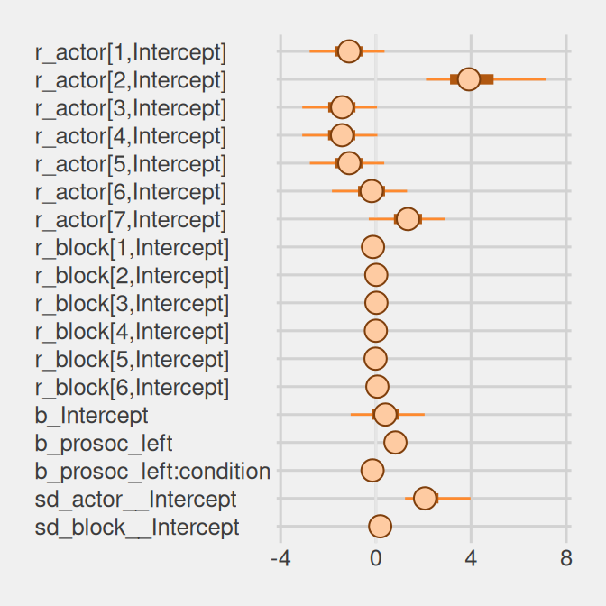
Once we get the posterior samples, it’s easy to compare the random variances as in Figure 12.4.b.
post %>%
ggplot(aes(x = sd_actor__Intercept)) +
geom_density(linewidth = 0, fill = "orange1", alpha = 3 / 4) +
geom_density(
aes(x = sd_block__Intercept),
linewidth = 0,
fill = "orange4",
alpha = 3 / 4
) +
annotate(
geom = "text",
x = 2 / 3,
y = 2,
label = "block",
color = "orange4"
) +
annotate(
geom = "text",
x = 2,
y = 3 / 4,
label = "actor",
color = "orange1"
) +
scale_y_continuous(NULL, breaks = NULL) +
ggtitle(expression(sigma["<group>"])) +
coord_cartesian(xlim = c(0, 4)) +
theme_fivethirtyeight()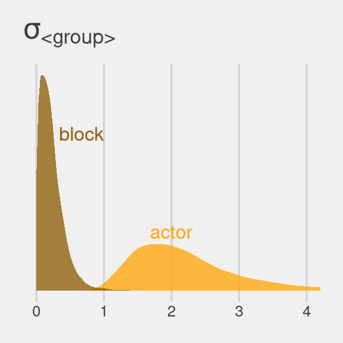
We might compare our models by their PSIS-LOO values.
b12.4 <- add_criterion(b12.4, criterion = "loo")Automatically saving the model object in 'fits/b12.04.rds'b12.5 <- add_criterion(b12.5, criterion = "loo")Automatically saving the model object in 'fits/b12.05.rds'loo_compare(b12.4, b12.5) %>%
print(simplify = F) elpd_diff se_diff elpd_loo se_elpd_loo p_loo se_p_loo looic se_looic
b12.4 0.0 0.0 -265.8 9.7 8.2 0.4 531.5 19.5
b12.5 -0.6 0.9 -266.3 9.8 10.4 0.5 532.7 19.7 model_weights(b12.4, b12.5, weights = "loo") %>%
round(digits = 2)b12.4 b12.5
0.64 0.36 The two models yield nearly-equivalent information criteria values. Yet recall what McElreath wrote: “There is nothing to gain here by selecting either model. The comparison of the two models tells a richer story” (p. 367).
12.3.3 Even more clusters
Adding more types of clusters proceeds the same way. At some point the model may become too complex to reliably fit to data. But Hamiltonian Monte Carlo is very capable with varying effects. It can easily handle tens of thousands of varying effect parameters. Sampling will be slow in such cases, but it will work.
So don’t be shy–if you have a good theoretical reason to include a cluster variable, then you also have a good theoretical reason toe partially pool its parameters. (p. 376)
This section just hints at a historical software difficulty. In short, it’s not uncommon to have a theory-based model that includes multiple sources of clustering (i.e., requiring many ( <varying parameter(s)> | <grouping variable(s)> ) parts in the model formula). This can make for all kinds of computational difficulties and result in software error messages, inadmissible solutions, and so on. One of the practical solutions to difficulties like these has been to simplify the statistical models by removing some of the clustering terms. Even though such simpler models were not the theory-based ones, at least they yielded solutions. Nowadays, Stan (via brms or otherwise) is making it easier to fit the full theoretically-based model. To learn more about this topic, check out this nice blog post by Michael Frank, Mixed effects models: Is it time to go Bayesian by default?. Make sure to check out the discussion in the comments section, which includes all-stars like Bürkner and Douglas Bates. You can get more context for the issue from Barr et al. (2013), Random effects structure for confirmatory hypothesis testing: Keep it maximal.
12.4 Multilevel posterior predictions
Producing implied predictions from a fit model, is very helpful for understanding what the model means. Every model is a merger of sense and nonsense. When we understand a model, we can find its sense and control its nonsense. But as models get more complex, it is very difficult to impossible to understand them just by inspecting tables of posterior means and intervals. Exploring implied posterior predictions helps much more…
…The introduction of varying effects does introduce nuance, however.
First, we should no longer expect the model to exactly retrodict the sample, because adaptive regularization has as its goal to trade off poorer fit in sample for better inference and hopefully better fit out of sample. This is what shrinkage does for us…
Second, “prediction” in the context of a multilevel model requires additional choices. If we wish to validate a model against the specific clusters used to fit the model, that is one thing. But if we instead wish to compute predictions for new clusters, other than the one observed in the sample, that is quite another. We’ll consider each of these in turn, continuing to use the chimpanzees model from the previous section. (p. 376)
12.4.1 Posterior prediction for same clusters
Like McElreath did in the text, we’ll do this two ways. Recall we use brms::fitted() in place of rethinking::link().
chimp <- 2
nd <- tibble(
prosoc_left = c(0, 1, 0, 1),
condition = c(0, 0, 1, 1),
actor = chimp
)
(chimp_2_fitted <- fitted(b12.4, newdata = nd) %>%
data.frame() %>%
mutate(
condition = factor(
c("0/0", "1/0", "0/1", "1/1"),
levels = c("0/0", "1/0", "0/1", "1/1")
)
)) Estimate Est.Error Q2.5 Q97.5 condition
1 0.9804416 0.019898272 0.9265736 0.9997981 0/0
2 0.9910049 0.009684209 0.9643563 0.9999145 1/0
3 0.9804416 0.019898272 0.9265736 0.9997981 0/1
4 0.9897880 0.010934553 0.9597143 0.9998988 1/1(chimp_2_d <- d %>%
filter(actor == chimp) %>%
group_by(prosoc_left, condition) %>%
summarise(prob = mean(pulled_left)) %>%
ungroup() %>%
mutate(condition = str_c(prosoc_left, "/", condition)) %>%
mutate(condition = factor(condition, levels = c("0/0", "1/0", "0/1", "1/1"))))# A tibble: 4 × 3
prosoc_left condition prob
<int> <fct> <dbl>
1 0 0/0 1
2 0 0/1 1
3 1 1/0 1
4 1 1/1 1McElreath didn’t show the corresponding plot in the text. It might look like this.
chimp_2_fitted %>%
# if you want to use `geom_line()` or `geom_ribbon()` with a factor on the x axis,
# you need to code something like `group = 1` in `aes()`
ggplot(aes(x = condition, y = Estimate, group = 1)) +
geom_ribbon(aes(ymin = Q2.5, ymax = Q97.5), fill = "orange1") +
geom_line(color = "blue") +
geom_point(data = chimp_2_d, aes(y = prob), color = "grey25") +
ggtitle(
"Chimp #2",
subtitle = "The posterior mean and 95%\nintervals are the blue line\nand orange band, respectively.\nThe empirical means are\nthe charcoal dots."
) +
coord_cartesian(ylim = c(.75, 1)) +
theme_fivethirtyeight() +
theme(plot.subtitle = element_text(size = 10))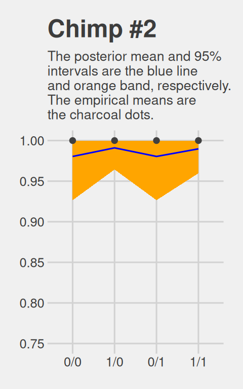
Do note how severely we’ve restricted the \(y\)-axis range. But okay, now let’s do things by hand. We’ll need to extract the posterior samples and look at the structure of the data.
post <- as_draws_df(b12.4)
glimpse(post)Rows: 16,000
Columns: 17
$ b_Intercept <dbl> 0.43296854, 0.33197713, 0.13558354, 0.48228130, 0.02399832, -1.34018353, -1.33320480, -0.93361…
$ b_prosoc_left <dbl> 0.7649978, 1.0292349, 1.2078286, 0.9219310, 0.7211352, 0.9285606, 0.7791374, 0.7332180, 0.7432…
$ `b_prosoc_left:condition` <dbl> -0.241234712, -0.128597781, 0.110285090, -0.106449576, -0.196708854, -0.040711536, -0.00976222…
$ sd_actor__Intercept <dbl> 1.630205, 1.677838, 1.419277, 1.337315, 1.223708, 1.967814, 1.482566, 1.823196, 1.844223, 1.40…
$ Intercept <dbl> 0.755158788, 0.814445135, 0.767069136, 0.916634433, 0.335388695, -0.886081121, -0.946076681, -…
$ `r_actor[1,Intercept]` <dbl> -0.97899087, -1.06407027, -0.94178595, -1.07538787, -0.90466360, 0.58949689, 0.48961065, 0.177…
$ `r_actor[2,Intercept]` <dbl> 2.132924, 3.215332, 2.409883, 2.047088, 3.014146, 5.987356, 3.667388, 4.850217, 4.923629, 4.96…
$ `r_actor[3,Intercept]` <dbl> -1.67816112, -1.26701576, -1.66416721, -1.61378218, -0.75708255, -0.03075395, 0.35095765, 0.17…
$ `r_actor[4,Intercept]` <dbl> -1.13251367, -1.41024679, -1.19830272, -1.36106727, -1.02545989, 0.16000557, 0.08347626, 0.486…
$ `r_actor[5,Intercept]` <dbl> -1.13247050, -1.45201750, -1.11720058, -1.15319512, -1.03515342, 0.79442531, 0.51471872, 0.730…
$ `r_actor[6,Intercept]` <dbl> -0.47878558, -0.32393057, 0.05728104, -0.10928000, 0.49029613, 1.28310244, 1.48470366, 1.55913…
$ `r_actor[7,Intercept]` <dbl> 1.6760174, 1.2491931, 1.9495191, 1.6314593, 1.6438196, 3.4612720, 3.1101999, 3.6223226, 3.6240…
$ lprior <dbl> -11.41902, -11.46383, -11.22983, -11.15013, -11.03478, -11.70796, -11.28619, -11.58460, -11.60…
$ lp__ <dbl> -283.2317, -280.4149, -286.5177, -283.4107, -284.2295, -283.2842, -285.2828, -290.5901, -285.3…
$ .chain <int> 1, 1, 1, 1, 1, 1, 1, 1, 1, 1, 1, 1, 1, 1, 1, 1, 1, 1, 1, 1, 1, 1, 1, 1, 1, 1, 1, 1, 1, 1, 1, 1…
$ .iteration <int> 1, 2, 3, 4, 5, 6, 7, 8, 9, 10, 11, 12, 13, 14, 15, 16, 17, 18, 19, 20, 21, 22, 23, 24, 25, 26,…
$ .draw <int> 1, 2, 3, 4, 5, 6, 7, 8, 9, 10, 11, 12, 13, 14, 15, 16, 17, 18, 19, 20, 21, 22, 23, 24, 25, 26,…McElreath didn’t show what his R code 12.29 dens( post$a_actor[,5] ) would look like. But here’s our analogue.
post %>%
mutate(actor_5 = `r_actor[5,Intercept]`) %>%
ggplot(aes(x = actor_5)) +
geom_density(linewidth = 0, fill = "blue") +
scale_y_continuous(breaks = NULL) +
ggtitle("Chimp #5's density") +
theme_fivethirtyeight()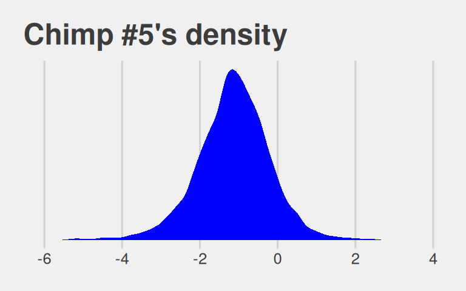
And because we made the density only using the r_actor[5,Intercept] values (i.e., we didn’t add b_Intercept to them), the density is in a deviance-score metric.
McElreath built his own link() function in R code 12.30. Here we’ll build an alternative to fitted().
# our hand-made `brms::fitted()` alternative
my_fitted <- function(prosoc_left, condition) {
post %>%
mutate(
fitted = (b_Intercept +
`r_actor[5,Intercept]` +
b_prosoc_left * prosoc_left +
`b_prosoc_left:condition` * prosoc_left * condition) %>%
plogis()
) %>%
select(fitted)
}
# the posterior summaries
(chimp_5_my_fitted <- tibble(
prosoc_left = c(0, 1, 0, 1),
condition = c(0, 0, 1, 1)
) %>%
mutate(post = map2(prosoc_left, condition, my_fitted)) %>%
unnest(post) %>%
mutate(
condition = factor(
str_c(prosoc_left, "/", condition),
levels = c("0/0", "1/0", "0/1", "1/1")
)
) %>%
group_by(condition) %>%
tidybayes::mean_qi(fitted))# A tibble: 4 × 7
condition fitted .lower .upper .width .point .interval
<fct> <dbl> <dbl> <dbl> <dbl> <chr> <chr>
1 0/0 0.331 0.222 0.453 0.95 mean qi
2 1/0 0.526 0.380 0.671 0.95 mean qi
3 0/1 0.331 0.222 0.453 0.95 mean qi
4 1/1 0.494 0.348 0.640 0.95 mean qi # the empirical summaries
chimp <- 5
(chimp_5_d <- d %>%
filter(actor == chimp) %>%
group_by(prosoc_left, condition) %>%
summarise(prob = mean(pulled_left)) %>%
ungroup() %>%
mutate(
condition = factor(
str_c(prosoc_left, "/", condition),
levels = c("0/0", "1/0", "0/1", "1/1")
)
))# A tibble: 4 × 3
prosoc_left condition prob
<int> <fct> <dbl>
1 0 0/0 0.333
2 0 0/1 0.278
3 1 1/0 0.556
4 1 1/1 0.5 Okay, let’s see how good we are at retrodicting the pulled_left probabilities for actor == 5.
chimp_5_my_fitted %>%
ggplot(aes(x = condition, y = fitted, group = 1)) +
geom_ribbon(aes(ymin = .lower, ymax = .upper), fill = "orange1") +
geom_line(color = "blue") +
geom_point(data = chimp_5_d, aes(y = prob), color = "grey25") +
ggtitle(
"Chimp #5",
subtitle = "This plot is like the last except\nwe did more by hand."
) +
coord_cartesian(ylim = c(0, 1)) +
theme_fivethirtyeight() +
theme(plot.subtitle = element_text(size = 10))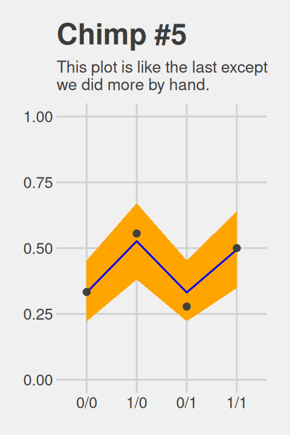
Not bad.
12.4.2 Posterior prediction for new clusters
By average actor, McElreath referred to a chimp with an intercept exactly at the population mean \(\alpha\). So this time we’ll only be working with the population parameters, or what are also sometimes called the fixed effects. When using brms::as_draws_df() output, this would mean working with columns beginning with the b_ prefix (i.e., b_Intercept, b_prosoc_left, and b_prosoc_left:condition).
post_average_actor <- post %>%
# here we use the linear regression formula to get the log_odds for the 4 conditions
transmute(
`0/0` = b_Intercept,
`1/0` = b_Intercept + b_prosoc_left,
`0/1` = b_Intercept,
`1/1` = b_Intercept + b_prosoc_left + `b_prosoc_left:condition`
) %>%
# with `mutate_all()` we can convert the estimates to probabilities in one fell swoop
mutate_all(plogis) %>%
# putting the data in the long format and grouping by condition (i.e., `key`)
gather() %>%
mutate(key = factor(key, level = c("0/0", "1/0", "0/1", "1/1"))) %>%
group_by(key) %>%
# here we get the summary values for the plot
summarise(
m = mean(value),
# note we're using 80% intervals
ll = quantile(value, probs = .1),
ul = quantile(value, probs = .9)
)
post_average_actor# A tibble: 4 × 4
key m ll ul
<fct> <dbl> <dbl> <dbl>
1 0/0 0.588 0.337 0.824
2 1/0 0.743 0.533 0.917
3 0/1 0.588 0.337 0.824
4 1/1 0.721 0.500 0.905Figure 12.5.a.
p1 <- post_average_actor %>%
ggplot(aes(x = key, y = m, group = 1)) +
geom_ribbon(aes(ymin = ll, ymax = ul), fill = "orange1") +
geom_line(color = "blue") +
ggtitle("Average actor") +
coord_cartesian(ylim = c(0, 1)) +
theme_fivethirtyeight() +
theme(plot.title = element_text(size = 14, hjust = .5))
p1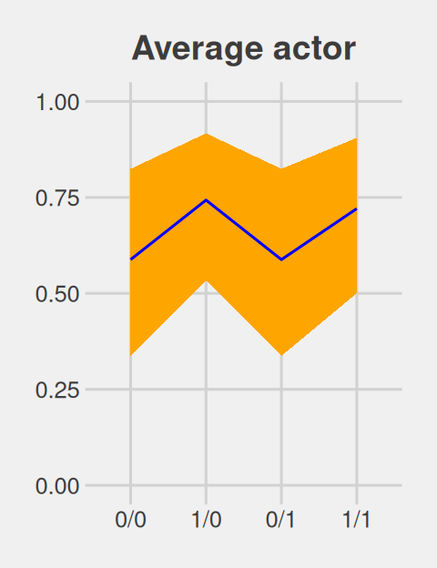
If we want to depict the variability across the chimps, we need to include sd_actor__Intercept into the calculations. In the first block of code, below, we simulate a bundle of new intercepts defined by
\[\alpha_\text{actor} \sim \operatorname{Normal}(0, \sigma_\text{actor}).\]
# the random effects
set.seed(12.42)
ran_ef <- tibble(
random_effect = rnorm(n = 1000, mean = 0, sd = post$sd_actor__Intercept)
) %>%
# with the `., ., ., .` syntax, we quadruple the previous line
bind_rows(., ., ., .)
# the fixed effects (i.e., the population parameters)
fix_ef <- post %>%
slice(1:1000) %>%
transmute(
`0/0` = b_Intercept,
`1/0` = b_Intercept + b_prosoc_left,
`0/1` = b_Intercept,
`1/1` = b_Intercept + b_prosoc_left + `b_prosoc_left:condition`
) %>%
gather() %>%
rename(condition = key, fixed_effect = value) %>%
mutate(condition = factor(condition, level = c("0/0", "1/0", "0/1", "1/1")))
# combine them
ran_and_fix_ef <- bind_cols(ran_ef, fix_ef) %>%
mutate(intercept = fixed_effect + random_effect) %>%
mutate(prob = plogis(intercept))
# to simplify things, we'll reduce them to summaries
(marginal_effects <- ran_and_fix_ef %>%
group_by(condition) %>%
summarise(
m = mean(prob),
ll = quantile(prob, probs = .1),
ul = quantile(prob, probs = .9)
))# A tibble: 4 × 4
condition m ll ul
<fct> <dbl> <dbl> <dbl>
1 0/0 0.552 0.0795 0.966
2 1/0 0.665 0.167 0.985
3 0/1 0.552 0.0795 0.966
4 1/1 0.647 0.139 0.984Behold Figure 12.5.b.
p2 <- marginal_effects %>%
ggplot(aes(x = condition, y = m, group = 1)) +
geom_ribbon(aes(ymin = ll, ymax = ul), fill = "orange1") +
geom_line(color = "blue") +
ggtitle("Marginal of actor") +
coord_cartesian(ylim = c(0, 1)) +
theme_fivethirtyeight() +
theme(plot.title = element_text(size = 14, hjust = .5))
p2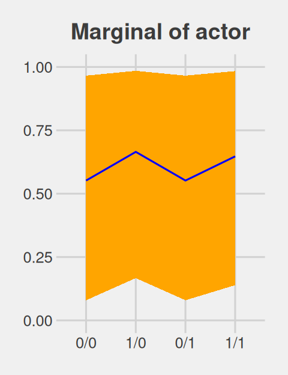
Figure 12.5.c just takes a tiny bit more wrangling.
p3 <- ran_and_fix_ef %>%
mutate(iter = rep(1:1000, times = 4)) %>%
filter(iter %in% c(1:50)) %>%
ggplot(aes(x = condition, y = prob, group = iter)) +
geom_line(alpha = 1 / 2, color = "orange3") +
ggtitle("50 simulated actors") +
coord_cartesian(ylim = c(0, 1)) +
theme_fivethirtyeight() +
theme(plot.title = element_text(size = 14, hjust = .5))
p3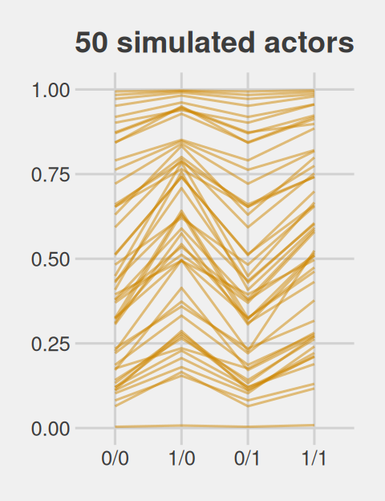
For the finale, we’ll stitch the three plots together.
p1 | p2 | p3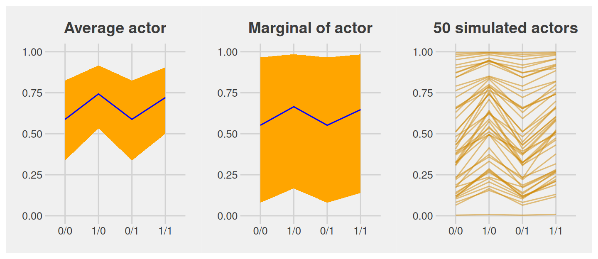
12.4.2.1 Bonus: Let’s use fitted() this time
We just made those plots using various wrangled versions of post, the data frame returned by as_draws_df(b.12.4). If you followed along closely, part of what made that a great exercise is that it forced you to consider what the various vectors in post meant with respect to the model formula. But it’s also handy to see how to do that from a different perspective. So in this section, we’ll repeat that process by relying on the fitted() function, instead. We’ll go in the same order, starting with the average actor.
nd <- tibble(prosoc_left = c(0, 1, 0, 1), condition = c(0, 0, 1, 1))
(f <- fitted(b12.4, newdata = nd, re_formula = NA, probs = c(.1, .9)) %>%
data.frame() %>%
bind_cols(nd) %>%
mutate(
condition = factor(
str_c(prosoc_left, "/", condition),
levels = c("0/0", "1/0", "0/1", "1/1")
)
)) Estimate Est.Error Q10 Q90 prosoc_left condition
1 0.5879582 0.1848794 0.3370921 0.8243891 0 0/0
2 0.7429734 0.1559068 0.5333511 0.9170116 1 1/0
3 0.5879582 0.1848794 0.3370921 0.8243891 0 0/1
4 0.7207848 0.1621246 0.5003208 0.9051591 1 1/1You should notice a few things. Since b12.4 is a multilevel model, it had three predictors: prosoc_left, condition, and actor. However, our nd data only included the first two of those predictors. The reason fitted() permitted that was because we set re_formula = NA. When you do that, you tell fitted() to ignore group-level effects (i.e., focus only on the fixed effects). This was our fitted() version of ignoring the r_ vectors returned by as_draws_df(). Here’s the plot.
p4 <- f %>%
ggplot(aes(x = condition, y = Estimate, group = 1)) +
geom_ribbon(aes(ymin = Q10, ymax = Q90), fill = "blue") +
geom_line(color = "orange1") +
ggtitle("Average actor") +
coord_cartesian(ylim = c(0, 1)) +
theme_fivethirtyeight() +
theme(plot.title = element_text(size = 14, hjust = .5))
p4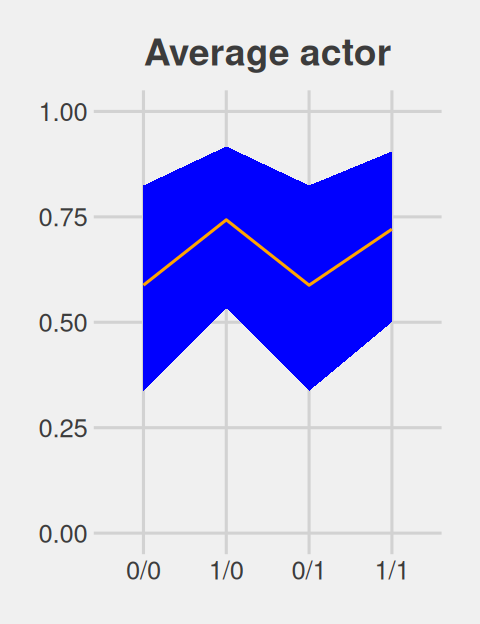
For marginal of actor, we can continue using the same nd data. This time we’ll be sticking with the default re_formula setting, which will accommodate the multilevel nature of the model. However, we’ll also be adding allow_new_levels = T and sample_new_levels = "gaussian". The former will allow us to marginalize across the specific actors in our data and the latter will instruct fitted() to use the multivariate normal distribution implied by the random effects. It’ll make more sense why I say multivariate normal by the end of Chapter 13. For now, just go with it.
# update the new data to include a new level of actor
nd <- tibble(
prosoc_left = c(0, 1, 0, 1),
condition = c(0, 0, 1, 1),
actor = "new"
)
(f <- fitted(
b12.4,
newdata = nd,
probs = c(.1, .9),
allow_new_levels = T,
sample_new_levels = "gaussian"
) %>%
data.frame() %>%
bind_cols(nd) %>%
mutate(
condition = factor(
str_c(prosoc_left, "/", condition),
levels = c("0/0", "1/0", "0/1", "1/1")
)
)) Estimate Est.Error Q10 Q90 prosoc_left condition actor
1 0.5556957 0.3299007 0.06861574 0.9716159 0 0/0 new
2 0.6644562 0.3116492 0.14339582 0.9876213 1 1/0 new
3 0.5556957 0.3299007 0.06861574 0.9716159 0 0/1 new
4 0.6476759 0.3155596 0.12785705 0.9856426 1 1/1 newHere’s our fitted()-based marginal of actor plot.
p5 <- f %>%
ggplot(aes(x = condition, y = Estimate, group = 1)) +
geom_ribbon(aes(ymin = Q10, ymax = Q90), fill = "blue") +
geom_line(color = "orange1") +
ggtitle("Marginal of actor") +
coord_cartesian(ylim = c(0, 1)) +
theme_fivethirtyeight() +
theme(plot.title = element_text(size = 14, hjust = .5))
p5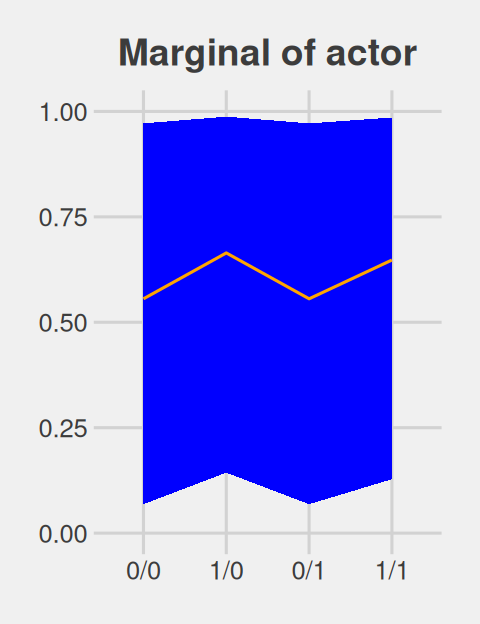
For the simulated actors plot, we’ll just amend our process from the last one. This time we set summary = F to keep the iteration-specific results and set nsamples = n_sim to indicate the number of actors we’d like to simulate (i.e., 50, as in the text).
# how many simulated actors would you like?
n_sim <- 50
f <- fitted(
b12.4,
newdata = nd,
probs = c(.1, .9),
allow_new_levels = T,
sample_new_levels = "gaussian",
summary = F,
nsamples = n_sim
) %>%
data.frame() %>%
mutate(iter = 1:n_sim) %>%
gather(key, value, -iter) %>%
bind_cols(
nd %>%
transmute(
condition = factor(
str_c(prosoc_left, "/", condition),
levels = c("0/0", "1/0", "0/1", "1/1")
)
) %>%
expand_grid(iter = 1:n_sim) %>%
select(-iter)
)
glimpse(f)Rows: 200
Columns: 4
$ iter <int> 1, 2, 3, 4, 5, 6, 7, 8, 9, 10, 11, 12, 13, 14, 15, 16, 17, 18, 19, 20, 21, 22, 23, 24, 25, 26, 27, 28, 29, 30,…
$ key <chr> "X1", "X1", "X1", "X1", "X1", "X1", "X1", "X1", "X1", "X1", "X1", "X1", "X1", "X1", "X1", "X1", "X1", "X1", "X…
$ value <dbl> 0.27750394, 0.64889584, 0.90768599, 0.85149758, 0.84637780, 0.32984896, 0.35034256, 0.68917811, 0.93361852, 0.…
$ condition <fct> 0/0, 0/0, 0/0, 0/0, 0/0, 0/0, 0/0, 0/0, 0/0, 0/0, 0/0, 0/0, 0/0, 0/0, 0/0, 0/0, 0/0, 0/0, 0/0, 0/0, 0/0, 0/0, …p6 <- f %>%
ggplot(aes(x = condition, y = value, group = iter)) +
geom_line(alpha = 1 / 2, color = "blue") +
ggtitle("50 simulated actors") +
coord_cartesian(ylim = c(0, 1)) +
theme_fivethirtyeight() +
theme(plot.title = element_text(size = 14, hjust = .5))
p6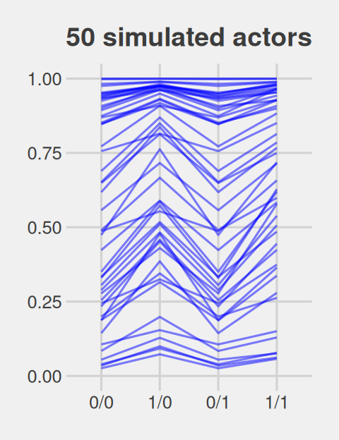
Here they are altogether.
p4 | p5 | p6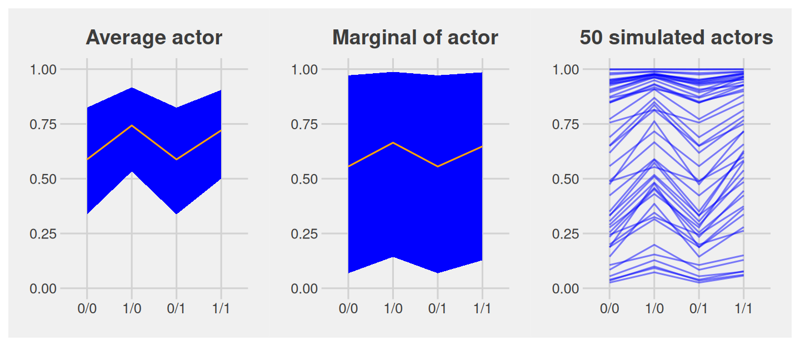
12.4.3 Focus and multilevel prediction
First, let’s load the Kline data.
# prep data
library(rethinking)
data(Kline)
d <- KlineSwitch out the packages, once again.
detach(package:rethinking, unload = T)
library(brms)
rm(Kline)The statistical formula for our multilevel count model is
\[\begin{align*} \text{total\_tools}_i & \sim \operatorname{Poisson}(\mu_i) \\ \log (\mu_i) & = \alpha + \color{blue}{\alpha_{\text{culture}_i}} + \beta \log (\text{population}_i) \\ \alpha & \sim \operatorname{Normal}(0, 10) \\ \beta & \sim \operatorname{Normal}(0, 1) \\ \color{blue}{\alpha_\text{culture}} & \color{blue}\sim \color{blue}{\operatorname{Normal}(0, \sigma_{\text{culture}})} \\ \sigma_\text{culture} & \sim \operatorname{HalfCauchy}(0, 1). \\ \end{align*}\]
With brms, we don’t actually need to make the logpop or society variables. We’re ready to fit the multilevel Kline model with the data in hand.
b12.6 <- brm(
data = d,
family = poisson,
total_tools ~ 0 + Intercept + log(population) + (1 | culture),
prior = c(
prior(normal(0, 10), class = b, coef = Intercept),
prior(normal(0, 1), class = b),
prior(cauchy(0, 1), class = sd)
),
iter = 4000,
warmup = 1000,
cores = 3,
chains = 3,
seed = 12,
file = "fits/b12.06"
)Compiling Stan program...Start samplingNote how we used the special 0 + Intercept syntax rather than using the default Intercept. This is because our predictor variable was not mean centered. For more info, see brms GitHub issue #114. Though we used the 0 + Intercept syntax for the fixed effect, it was not necessary for the random effect. Both ways work.
Here is the data-processing work for our variant of Figure 12.6.
nd <- tibble(
population = seq(from = 1000, to = 400000, by = 5000),
# to "simulate counterfactual societies, using the hyper-parameters" (p. 383),
# we'll plug a new island into the `culture` variable
culture = "my_island"
)
p <- predict(
b12.6,
# this allows us to simulate values for our counterfactual island, "my_island"
allow_new_levels = T,
# here we explicitly tell brms we want to include the group-level effects
re_formula = ~ (1 | culture),
# from the brms manual, this uses the "(multivariate) normal distribution implied by
# the group-level standard deviations and correlations", which appears to be
# what McElreath did in the text.
sample_new_levels = "gaussian",
newdata = nd,
probs = c(.015, .055, .165, .835, .945, .985)
) %>%
data.frame() %>%
bind_cols(nd)
p %>%
glimpse()Rows: 80
Columns: 10
$ Estimate <dbl> 19.90978, 31.24878, 36.59889, 40.29633, 43.34900, 45.81900, 48.11922, 50.31933, 51.96489, 53.50800, 55.13756,…
$ Est.Error <dbl> 10.44142, 14.63529, 17.00673, 19.09058, 20.77134, 22.32186, 23.90233, 25.21924, 26.32209, 27.27295, 28.62126,…
$ Q1.5 <dbl> 5.000, 10.000, 12.000, 13.000, 14.000, 15.000, 16.000, 17.000, 17.000, 18.000, 18.985, 19.000, 19.000, 19.000…
$ Q5.5 <dbl> 8, 14, 17, 19, 21, 22, 23, 23, 25, 25, 26, 27, 27, 27, 28, 29, 29, 30, 29, 30, 30, 31, 31, 31, 31, 31, 32, 32…
$ Q16.5 <dbl> 12.000, 20.000, 24.000, 26.000, 28.000, 29.000, 31.000, 32.000, 33.000, 34.000, 35.000, 35.835, 37.000, 37.00…
$ Q83.5 <dbl> 27, 41, 48, 53, 57, 60, 63, 66, 68, 70, 72, 74, 76, 78, 79, 80, 82, 84, 85, 87, 88, 89, 90, 91, 92, 94, 94, 9…
$ Q94.5 <dbl> 36.000, 53.000, 62.000, 67.000, 73.000, 77.000, 82.000, 85.000, 88.000, 91.000, 94.000, 97.000, 100.000, 101.…
$ Q98.5 <dbl> 48.000, 70.000, 82.000, 91.000, 99.000, 103.000, 112.000, 116.000, 120.015, 125.000, 128.000, 133.000, 139.00…
$ population <dbl> 1000, 6000, 11000, 16000, 21000, 26000, 31000, 36000, 41000, 46000, 51000, 56000, 61000, 66000, 71000, 76000,…
$ culture <chr> "my_island", "my_island", "my_island", "my_island", "my_island", "my_island", "my_island", "my_island", "my_i…For a detailed discussion on this way of using brms::predict(), see Andrew MacDonald’s great blogpost on this very figure. Here’s what we’ve been working for.
p %>%
ggplot(aes(x = log(population), y = Estimate)) +
geom_ribbon(aes(ymin = Q1.5, ymax = Q98.5), fill = "orange2", alpha = 1 / 3) +
geom_ribbon(aes(ymin = Q5.5, ymax = Q94.5), fill = "orange2", alpha = 1 / 3) +
geom_ribbon(
aes(ymin = Q16.5, ymax = Q83.5),
fill = "orange2",
alpha = 1 / 3
) +
geom_line(color = "orange4") +
geom_text(
data = d,
aes(y = total_tools, label = culture),
size = 2.33,
color = "blue"
) +
ggtitle("Total tools as a function of log(population)") +
coord_cartesian(ylim = range(d$total_tools)) +
theme_fivethirtyeight() +
theme(plot.title = element_text(size = 12, hjust = .5))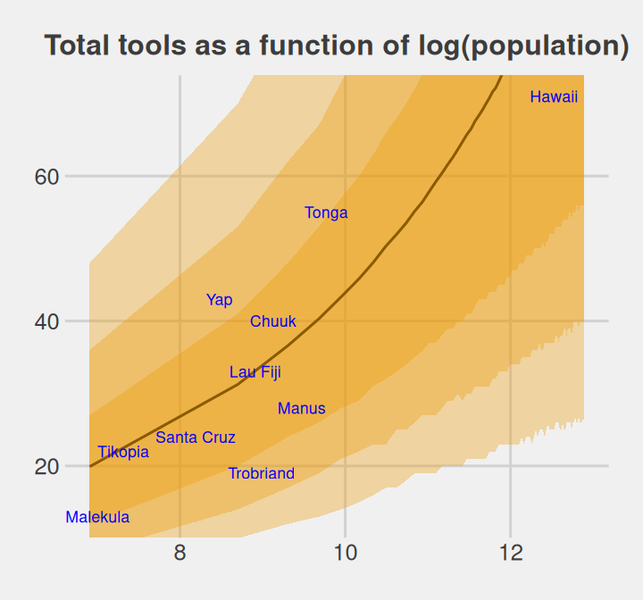
Glorious.
The envelope of predictions is a lot wider here than it was back in Chapter 10. This is a consequene of the varying intercepts, combined with the fact that there is much more variation in the data than a pure-Poisson model anticipates. (p. 384)
12.5 Summary Bonus: Put your random effects to work
A big part of this chapter, both what McElreath focused on in the text and even our plotting digression a bit above, focused on how to combine the fixed effects of a multilevel with the group-level. Given some binomial variable, \(\text{criterion}\), and some group term, \(\text{grouping variable}\), we’ve learned the simple multilevel model follows a form like
\[\begin{align*} \text{criterion}_i & \sim \operatorname{Binomial}(n_i \geq 1, p_i) \\ \operatorname{logit}(p_i) & = \alpha + \alpha_{\text{<grouping variable>}_i} \\ \alpha & \sim \operatorname{Normal}(0, 1) \\ \alpha_{\text{<grouping variable>}} & \sim \operatorname{Normal}(0, \sigma_{\text{<grouping variable>}}) \\ \sigma_{\text{<grouping variable>}} & \sim \operatorname{HalfCauchy}(0, 1), \end{align*}\]
and we’ve been grappling with the relation between the grand mean \(\alpha\) and the group-level deviations \(\alpha_{\text{<grouping variable>}}\). For situations where we have the brms::brm() model fit in hand, we’ve been playing with various ways to use the iterations, particularly with either the as_draws_df() method and the fitted()/predict() method. Both are great. But (a) we have other options, which I’d like to share, and (b) if you’re like me, you probably need more practice than following along with the examples in the text. In this bonus section, we are going to introduce two simplified models and then practice working with combining the grand mean various combinations of the random effects.
For our first step, we’ll introduce the models.
12.5.1 Intercepts-only models with one or two grouping variables
If you recall, b12.4 was our first multilevel model with the chimps data. We can retrieve the model formula like so.
b12.4$formulapulled_left | trials(1) ~ 1 + prosoc_left + prosoc_left:condition + (1 | actor) In addition to the model intercept and random effects for the individual chimps (i.e., actor), we also included fixed effects for the study conditions. For our bonus section, it’ll be easier if we reduce this to a simple intercepts-only model with the sole actor grouping factor. That model will follow the form
\[\begin{align*} \text{pulled\_left}_i & \sim \operatorname{Binomial}(n_i = 1, p_i) \\ \operatorname{logit}(p_i) & = \alpha + \alpha_{\text{actor}_i}\\ \alpha & \sim \operatorname{Normal}(0, 10) \\ \alpha_\text{actor} & \sim \operatorname{Normal}(0, \sigma_{\text{actor}}) \\ \sigma_\text{actor} & \sim \operatorname{HalfCauchy}(0, 1). \end{align*}\]
Before we fit the model, you might recall that (a) we’ve already removed the chimpanzees data after saving the data as d and (b) we subsequently reassigned the Kline data to d. Instead of reloading the rethinking package to retrieve the chimpanzees data, we might also acknowledge that the data has also been saved within our b12.4 fit object. [It’s easy to forget such things.]
b12.4$data %>%
glimpse()Rows: 504
Columns: 4
$ pulled_left <int> 0, 1, 0, 0, 1, 1, 0, 0, 0, 0, 1, 0, 1, 1, 0, 1, 0, 0, 1, 1, 1, 0, 1, 0, 0, 1, 0, 0, 0, 0, 0, 1, 1, 1, 0, 0, …
$ prosoc_left <int> 0, 0, 1, 0, 1, 1, 1, 1, 0, 0, 0, 1, 0, 1, 0, 1, 1, 0, 1, 0, 0, 0, 1, 1, 0, 0, 1, 1, 0, 1, 0, 1, 1, 1, 0, 0, …
$ condition <int> 0, 0, 0, 0, 0, 0, 0, 0, 0, 0, 0, 0, 0, 0, 0, 0, 0, 0, 0, 0, 0, 0, 0, 0, 0, 0, 0, 0, 0, 0, 0, 0, 0, 0, 0, 0, …
$ actor <int> 1, 1, 1, 1, 1, 1, 1, 1, 1, 1, 1, 1, 1, 1, 1, 1, 1, 1, 1, 1, 1, 1, 1, 1, 1, 1, 1, 1, 1, 1, 1, 1, 1, 1, 1, 1, …So there’s no need to reload anything. Everything we need is already at hand. Let’s fit the intercepts-only model.
b12.7 <- brm(
data = b12.4$data,
family = binomial,
pulled_left | trials(1) ~ 1 + (1 | actor),
prior = c(
prior(normal(0, 10), class = Intercept),
prior(cauchy(0, 1), class = sd)
),
iter = 5000,
warmup = 1000,
chains = 4,
cores = 4,
seed = 12,
file = "fits/b12.07"
)Only 2 levels detected so that family 'bernoulli' might be a more efficient choice.Compiling Stan program...Start samplingHere’s the model summary.
print(b12.7) Family: binomial
Links: mu = logit
Formula: pulled_left | trials(1) ~ 1 + (1 | actor)
Data: b12.4$data (Number of observations: 504)
Draws: 4 chains, each with iter = 5000; warmup = 1000; thin = 1;
total post-warmup draws = 16000
Multilevel Hyperparameters:
~actor (Number of levels: 7)
Estimate Est.Error l-95% CI u-95% CI Rhat Bulk_ESS Tail_ESS
sd(Intercept) 2.21 0.90 1.09 4.48 1.00 2627 3722
Regression Coefficients:
Estimate Est.Error l-95% CI u-95% CI Rhat Bulk_ESS Tail_ESS
Intercept 0.79 0.92 -0.99 2.74 1.00 2371 3191
Draws were sampled using sampling(NUTS). For each parameter, Bulk_ESS
and Tail_ESS are effective sample size measures, and Rhat is the potential
scale reduction factor on split chains (at convergence, Rhat = 1).Now recall that our competing cross-classified model, b12.5, added random effects for the trial blocks. Here was that formula.
b12.5$formulapulled_left | trials(1) ~ prosoc_left + (1 | actor) + (1 | block) + prosoc_left:condition And, of course, we can retrieve the data from that model, too.
b12.5$data %>%
glimpse()Rows: 504
Columns: 5
$ pulled_left <int> 0, 1, 0, 0, 1, 1, 0, 0, 0, 0, 1, 0, 1, 1, 0, 1, 0, 0, 1, 1, 1, 0, 1, 0, 0, 1, 0, 0, 0, 0, 0, 1, 1, 1, 0, 0, …
$ prosoc_left <int> 0, 0, 1, 0, 1, 1, 1, 1, 0, 0, 0, 1, 0, 1, 0, 1, 1, 0, 1, 0, 0, 0, 1, 1, 0, 0, 1, 1, 0, 1, 0, 1, 1, 1, 0, 0, …
$ condition <int> 0, 0, 0, 0, 0, 0, 0, 0, 0, 0, 0, 0, 0, 0, 0, 0, 0, 0, 0, 0, 0, 0, 0, 0, 0, 0, 0, 0, 0, 0, 0, 0, 0, 0, 0, 0, …
$ actor <int> 1, 1, 1, 1, 1, 1, 1, 1, 1, 1, 1, 1, 1, 1, 1, 1, 1, 1, 1, 1, 1, 1, 1, 1, 1, 1, 1, 1, 1, 1, 1, 1, 1, 1, 1, 1, …
$ block <int> 1, 1, 1, 1, 1, 1, 2, 2, 2, 2, 2, 2, 3, 3, 3, 3, 3, 3, 4, 4, 4, 4, 4, 4, 5, 5, 5, 5, 5, 5, 6, 6, 6, 6, 6, 6, …It’s the same data we used from the b12.4 model, but with the addition of the block index. With those data in hand, we can fit the intercepts-only version of our cross-classified model. This model formula follows the form
\[\begin{align*} \text{pulled\_left}_i & \sim \operatorname{Binomial}(n_i = 1, p_i) \\ \operatorname{logit}(p_i) & = \alpha + \alpha_{\text{actor}_i} + \alpha_{\text{block}_i}\\ \alpha & \sim \operatorname{Normal}(0, 10) \\ \alpha_\text{actor} & \sim \operatorname{Normal}(0, \sigma_\text{actor}) \\ \alpha_\text{block} & \sim \operatorname{Normal}(0, \sigma_\text{block}) \\ \sigma_\text{actor} & \sim \operatorname{HalfCauchy}(0, 1) \\ \sigma_\text{block} & \sim \operatorname{HalfCauchy}(0, 1). \end{align*}\]
Fit the model.
b12.8 <- brm(
data = b12.5$data,
family = binomial,
pulled_left | trials(1) ~ 1 + (1 | actor) + (1 | block),
prior = c(
prior(normal(0, 10), class = Intercept),
prior(cauchy(0, 1), class = sd)
),
iter = 5000,
warmup = 1000,
chains = 4,
cores = 4,
seed = 12,
file = "fits/b12.08"
)Only 2 levels detected so that family 'bernoulli' might be a more efficient choice.Compiling Stan program...Start samplingHere’s the summary.
print(b12.8) Family: binomial
Links: mu = logit
Formula: pulled_left | trials(1) ~ 1 + (1 | actor) + (1 | block)
Data: b12.5$data (Number of observations: 504)
Draws: 4 chains, each with iter = 5000; warmup = 1000; thin = 1;
total post-warmup draws = 16000
Multilevel Hyperparameters:
~actor (Number of levels: 7)
Estimate Est.Error l-95% CI u-95% CI Rhat Bulk_ESS Tail_ESS
sd(Intercept) 2.20 0.87 1.10 4.45 1.00 4395 5835
~block (Number of levels: 6)
Estimate Est.Error l-95% CI u-95% CI Rhat Bulk_ESS Tail_ESS
sd(Intercept) 0.22 0.18 0.01 0.68 1.00 5727 6379
Regression Coefficients:
Estimate Est.Error l-95% CI u-95% CI Rhat Bulk_ESS Tail_ESS
Intercept 0.79 0.88 -0.97 2.63 1.00 3813 5843
Draws were sampled using sampling(NUTS). For each parameter, Bulk_ESS
and Tail_ESS are effective sample size measures, and Rhat is the potential
scale reduction factor on split chains (at convergence, Rhat = 1).Now we’ve fit our two intercepts-only models, let’s get to the heart of this section. We are going to practice four methods for working with the posterior samples. Each method will revolve around a different primary function. In order, they are
brms::as_draws_df(),brms::coef(),brms::fitted(), andtidybayes::spread_draws().
We’ve already had some practice with the first three, but I hope this section will make them even more clear. The tidybayes::spread_draws() method will be new, to us. I think you’ll find it’s a handy alternative.
With each of the four methods, we’ll practice three different model summaries:
- getting the posterior draws for the
actor-level estimates from theb12.7model; - getting the posterior draws for the
actor-level estimates from the cross-classifiedb12.8model, averaging over the levels ofblock; and - getting the posterior draws for the
actor-level estimates from the cross-classifiedb12.8model, based onblock == 1.
So to be clear, our goal is to accomplish those three tasks with four methods, each of which should yield equivalent results.
12.5.2 brms::as_draws_df()
To warm up, let’s take a look at the structure of the as_draws_df() output for the simple b12.7 model.
as_draws_df(b12.7) %>% str()draws_df [16,000 × 15] (S3: draws_df/draws/tbl_df/tbl/data.frame)
$ b_Intercept : num [1:16000] 0.634 0.395 0.465 1.368 1.962 ...
$ sd_actor__Intercept : num [1:16000] 2.35 2.92 2.8 1.14 1.94 ...
$ Intercept : num [1:16000] 0.634 0.395 0.465 1.368 1.962 ...
$ r_actor[1,Intercept]: num [1:16000] -0.857 -0.664 -0.763 -1.438 -2.468 ...
$ r_actor[2,Intercept]: num [1:16000] 6.14 8.35 7.91 2.76 3.73 ...
$ r_actor[3,Intercept]: num [1:16000] -0.889 -1.31 -0.663 -1.896 -2.988 ...
$ r_actor[4,Intercept]: num [1:16000] -1.532 -1.507 -0.669 -2.056 -2.337 ...
$ r_actor[5,Intercept]: num [1:16000] -0.949 -0.442 -1.22 -1.309 -2.789 ...
$ r_actor[6,Intercept]: num [1:16000] -0.168 0.496 -0.053 -0.746 -1.339 ...
$ r_actor[7,Intercept]: num [1:16000] 1.168 1.805 2.381 0.258 0.617 ...
$ lprior : num [1:16000] -5.55 -5.93 -5.85 -4.52 -5.25 ...
$ lp__ : num [1:16000] -280 -283 -285 -286 -285 ...
$ .chain : int [1:16000] 1 1 1 1 1 1 1 1 1 1 ...
$ .iteration : int [1:16000] 1 2 3 4 5 6 7 8 9 10 ...
$ .draw : int [1:16000] 1 2 3 4 5 6 7 8 9 10 ...The b_Intercept vector corresponds to the \(\alpha\) term in the statistical model. The second vector, sd_actor__Intercept, corresponds to the \(\sigma_\text{actor}\) term. And the next 7 vectors beginning with the r_actor suffix are the \(\alpha_\text{actor}\) deviations from the grand mean, \(\alpha\). Thus if we wanted to get the model-implied probability for our first chimp, we’d add b_Intercept to r_actor[1,Intercept] and then take the inverse logit.
as_draws_df(b12.7) %>%
transmute(
`chimp 1's average probability of pulling left` = (b_Intercept +
`r_actor[1,Intercept]`) %>%
plogis()
) %>%
head()# A tibble: 6 × 1
`chimp 1's average probability of pulling left`
<dbl>
1 0.444
2 0.433
3 0.426
4 0.483
5 0.376
6 0.462To complete our first task, then, of getting the posterior draws for the actor-level estimates from the b12.7 model, we can do that in bulk.
p1 <- as_draws_df(b12.7) %>%
transmute(
`chimp 1's average probability of pulling left` = b_Intercept +
`r_actor[1,Intercept]`,
`chimp 2's average probability of pulling left` = b_Intercept +
`r_actor[2,Intercept]`,
`chimp 3's average probability of pulling left` = b_Intercept +
`r_actor[3,Intercept]`,
`chimp 4's average probability of pulling left` = b_Intercept +
`r_actor[4,Intercept]`,
`chimp 5's average probability of pulling left` = b_Intercept +
`r_actor[5,Intercept]`,
`chimp 6's average probability of pulling left` = b_Intercept +
`r_actor[6,Intercept]`,
`chimp 7's average probability of pulling left` = b_Intercept +
`r_actor[7,Intercept]`
) %>%
mutate_all(plogis)
str(p1)tibble [16,000 × 7] (S3: tbl_df/tbl/data.frame)
$ chimp 1's average probability of pulling left: num [1:16000] 0.444 0.433 0.426 0.483 0.376 ...
$ chimp 2's average probability of pulling left: num [1:16000] 0.999 1 1 0.984 0.997 ...
$ chimp 3's average probability of pulling left: num [1:16000] 0.437 0.286 0.451 0.371 0.264 ...
$ chimp 4's average probability of pulling left: num [1:16000] 0.29 0.247 0.449 0.335 0.407 ...
$ chimp 5's average probability of pulling left: num [1:16000] 0.422 0.488 0.32 0.515 0.304 ...
$ chimp 6's average probability of pulling left: num [1:16000] 0.615 0.709 0.602 0.651 0.651 ...
$ chimp 7's average probability of pulling left: num [1:16000] 0.858 0.9 0.945 0.836 0.929 ...One of the things I really like about this method is the b_Intercept + r_actor[i,Intercept] part of the code makes it very clear, to me, how the as_draws_df() columns correspond to the statistical model, \(\operatorname{logit}(p_i) = \alpha + \alpha_{\text{actor}_i}\). This method easily extends to our next task, getting the posterior draws for the actor-level estimates from the cross-classified b12.8 model, averaging over the levels of block. In fact, other than switching out b12.7 for b12.8, the method is identical.
p2 <- as_draws_df(b12.8) %>%
transmute(
`chimp 1's average probability of pulling left` = b_Intercept +
`r_actor[1,Intercept]`,
`chimp 2's average probability of pulling left` = b_Intercept +
`r_actor[2,Intercept]`,
`chimp 3's average probability of pulling left` = b_Intercept +
`r_actor[3,Intercept]`,
`chimp 4's average probability of pulling left` = b_Intercept +
`r_actor[4,Intercept]`,
`chimp 5's average probability of pulling left` = b_Intercept +
`r_actor[5,Intercept]`,
`chimp 6's average probability of pulling left` = b_Intercept +
`r_actor[6,Intercept]`,
`chimp 7's average probability of pulling left` = b_Intercept +
`r_actor[7,Intercept]`
) %>%
mutate_all(plogis)
str(p2)tibble [16,000 × 7] (S3: tbl_df/tbl/data.frame)
$ chimp 1's average probability of pulling left: num [1:16000] 0.332 0.378 0.349 0.402 0.352 ...
$ chimp 2's average probability of pulling left: num [1:16000] 0.986 0.996 0.991 0.987 0.985 ...
$ chimp 3's average probability of pulling left: num [1:16000] 0.361 0.374 0.309 0.332 0.277 ...
$ chimp 4's average probability of pulling left: num [1:16000] 0.249 0.386 0.26 0.422 0.355 ...
$ chimp 5's average probability of pulling left: num [1:16000] 0.406 0.487 0.493 0.443 0.398 ...
$ chimp 6's average probability of pulling left: num [1:16000] 0.626 0.758 0.693 0.68 0.672 ...
$ chimp 7's average probability of pulling left: num [1:16000] 0.934 0.934 0.873 0.88 0.818 ...The reason we can still get away with this is because the grand mean in the b12.8 model is the grand mean across all levels of actor and block. AND it’s the case that the r_actor and r_block vectors returned by as_draws_df(b12.8) are all in deviation metrics–execute as_draws_df(b12.8) %>% glimpse() if it will help you follow along. So if we simply leave out the r_block vectors, we are ignoring the specific block-level deviations, effectively averaging over them.
Now for our third task, we’ve decided we wanted to retrieve the posterior draws for the actor-level estimates from the cross-classified b12.8 model, based on block == 1. To get the chimp-specific estimates for the first block, we simply add + r_block[1,Intercept] to the end of each formula.
p3 <- as_draws_df(b12.8) %>%
transmute(
`chimp 1's average probability of pulling left` = b_Intercept +
`r_actor[1,Intercept]` +
`r_block[1,Intercept]`,
`chimp 2's average probability of pulling left` = b_Intercept +
`r_actor[2,Intercept]` +
`r_block[1,Intercept]`,
`chimp 3's average probability of pulling left` = b_Intercept +
`r_actor[3,Intercept]` +
`r_block[1,Intercept]`,
`chimp 4's average probability of pulling left` = b_Intercept +
`r_actor[4,Intercept]` +
`r_block[1,Intercept]`,
`chimp 5's average probability of pulling left` = b_Intercept +
`r_actor[5,Intercept]` +
`r_block[1,Intercept]`,
`chimp 6's average probability of pulling left` = b_Intercept +
`r_actor[6,Intercept]` +
`r_block[1,Intercept]`,
`chimp 7's average probability of pulling left` = b_Intercept +
`r_actor[7,Intercept]` +
`r_block[1,Intercept]`
) %>%
mutate_all(plogis)
str(p3)tibble [16,000 × 7] (S3: tbl_df/tbl/data.frame)
$ chimp 1's average probability of pulling left: num [1:16000] 0.301 0.264 0.379 0.394 0.396 ...
$ chimp 2's average probability of pulling left: num [1:16000] 0.984 0.993 0.992 0.987 0.987 ...
$ chimp 3's average probability of pulling left: num [1:16000] 0.329 0.261 0.337 0.325 0.317 ...
$ chimp 4's average probability of pulling left: num [1:16000] 0.223 0.271 0.286 0.414 0.399 ...
$ chimp 5's average probability of pulling left: num [1:16000] 0.372 0.359 0.526 0.435 0.443 ...
$ chimp 6's average probability of pulling left: num [1:16000] 0.592 0.649 0.72 0.673 0.712 ...
$ chimp 7's average probability of pulling left: num [1:16000] 0.925 0.894 0.887 0.876 0.845 ...Again, I like this method because of how close the wrangling code within transmute() is to the statistical model formula. I wrote a lot of code like this in my early days of working with these kinds of models, and I think the pedagogical insights were helpful. But this method has its limitations. It works fine if you’re working with some small number of groups. But that’s a lot of repetitious code and it would not scale well to situations where you have 50 or 500 levels in your grouping variable. We need alternatives.
12.5.3 brms::coef()
First, let’s review what the coef() function returns.
coef(b12.7)$actor
, , Intercept
Estimate Est.Error Q2.5 Q97.5
1 -0.3238902 0.2380260 -0.7945879 0.1357852
2 4.8568002 1.5168548 2.8329843 8.6450015
3 -0.6127502 0.2491624 -1.1074663 -0.1298870
4 -0.6163703 0.2461730 -1.1114547 -0.1382462
5 -0.3204013 0.2356681 -0.7969638 0.1364704
6 0.5819065 0.2445237 0.1119267 1.0753394
7 2.0776941 0.3665903 1.3933610 2.8495775By default, we get the familiar summaries for mean performances for each of our seven chimps. These, of course, are in the log-odds metric and simply tacking on plogis() isn’t going to fully get the job done if we want posterior standard deviations. So to get things in the probability metric, we’ll want to first set summary = F in order to work directly with un-summarized samples and then wrangle quite a bit. Part of the wrangling challenge is because coef() returns a list, rather than a data frame. With that in mind, the code for our first task of getting the posterior draws for the actor-level estimates from the b12.7 model looks like so.
c1 <- coef(b12.7, summary = F)$actor[,,] %>%
data.frame() %>%
gather() %>%
mutate(
key = str_c("chimp ", key, "'s average probability of pulling left"),
value = plogis(value),
# we need an iteration index for `spread()` to work properly
iter = rep(1:16000, times = 7)
) %>%
spread(key = key, value = value)
str(c1)'data.frame': 16000 obs. of 8 variables:
$ iter : int 1 2 3 4 5 6 7 8 9 10 ...
$ chimp X1's average probability of pulling left: num 0.444 0.433 0.426 0.483 0.376 ...
$ chimp X2's average probability of pulling left: num 0.999 1 1 0.984 0.997 ...
$ chimp X3's average probability of pulling left: num 0.437 0.286 0.451 0.371 0.264 ...
$ chimp X4's average probability of pulling left: num 0.29 0.247 0.449 0.335 0.407 ...
$ chimp X5's average probability of pulling left: num 0.422 0.488 0.32 0.515 0.304 ...
$ chimp X6's average probability of pulling left: num 0.615 0.709 0.602 0.651 0.651 ...
$ chimp X7's average probability of pulling left: num 0.858 0.9 0.945 0.836 0.929 ...So with this method, you get a little practice with three-dimensional indexing, which is a good skill to have. Now let’s extend it to our second task, getting the posterior draws for the actor-level estimates from the cross-classified b12.8 model, averaging over the levels of block.
c2 <- coef(b12.8, summary = F)$actor[,,] %>%
data.frame() %>%
gather() %>%
mutate(
key = str_c("chimp ", key, "'s average probability of pulling left"),
value = plogis(value),
iter = rep(1:16000, times = 7)
) %>%
spread(key = key, value = value)
str(c2)'data.frame': 16000 obs. of 8 variables:
$ iter : int 1 2 3 4 5 6 7 8 9 10 ...
$ chimp X1's average probability of pulling left: num 0.332 0.378 0.349 0.402 0.352 ...
$ chimp X2's average probability of pulling left: num 0.986 0.996 0.991 0.987 0.985 ...
$ chimp X3's average probability of pulling left: num 0.361 0.374 0.309 0.332 0.277 ...
$ chimp X4's average probability of pulling left: num 0.249 0.386 0.26 0.422 0.355 ...
$ chimp X5's average probability of pulling left: num 0.406 0.487 0.493 0.443 0.398 ...
$ chimp X6's average probability of pulling left: num 0.626 0.758 0.693 0.68 0.672 ...
$ chimp X7's average probability of pulling left: num 0.934 0.934 0.873 0.88 0.818 ...As with our as_draws_df() method, this code was near identical to the block, above. All we did was switch out b12.7 for b12.8. [Okay, we removed a line of annotations. But that doesn’t really count.] We should point something out, though. Consider what coef() yields when working with a cross-classified model.
coef(b12.8)$actor
, , Intercept
Estimate Est.Error Q2.5 Q97.5
1 -0.3206475 0.2674527 -0.84605042 0.20581089
2 4.8694372 1.5373098 2.84941843 8.69952636
3 -0.6184210 0.2737048 -1.16125493 -0.08394420
4 -0.6186074 0.2732606 -1.16439289 -0.08474499
5 -0.3216491 0.2690518 -0.85375748 0.20283471
6 0.5866675 0.2744172 0.06047051 1.14084879
7 2.0879036 0.3928048 1.37042071 2.89851221
$block
, , Intercept
Estimate Est.Error Q2.5 Q97.5
1 0.5993671 0.9008896 -1.1781328 2.467748
2 0.8409485 0.8896111 -0.8907453 2.704623
3 0.8435788 0.8904339 -0.8857083 2.713862
4 0.7697721 0.8883331 -0.9697971 2.643146
5 0.7707737 0.8872212 -0.9628741 2.623438
6 0.8909384 0.8933581 -0.8531194 2.777612Now we have a list of two elements, one for actor and one for block. What might not be immediately obvious is that the summaries returned by one grouping level are based off of averaging over the other. Although this made our second task easy, it provides a challenge for our third task, getting the posterior draws for the actor-level estimates from the cross-classified b12.8 model, based on block == 1. To accomplish that, we’ll need to bring in ranef(). Let’s review what that returns.
ranef(b12.8)$actor
, , Intercept
Estimate Est.Error Q2.5 Q97.5
1 -1.1089588 0.9011454 -3.0126031 0.6267339
2 4.0811258 1.5999469 1.7867025 7.9250169
3 -1.4067323 0.9069224 -3.3228508 0.3443303
4 -1.4069187 0.9066117 -3.3010957 0.3551492
5 -1.1099604 0.9027337 -2.9975740 0.6659011
6 -0.2016438 0.9027878 -2.0779128 1.5672802
7 1.2995923 0.9320361 -0.6035786 3.1726172
$block
, , Intercept
Estimate Est.Error Q2.5 Q97.5
1 -0.18894420 0.2334918 -0.7532920 0.1183343
2 0.05263721 0.1888708 -0.3024473 0.4804189
3 0.05526748 0.1869676 -0.2933669 0.4841940
4 -0.01853919 0.1837453 -0.4202234 0.3620005
5 -0.01753767 0.1867716 -0.4241998 0.3593289
6 0.10262707 0.2016107 -0.2320208 0.5846639The format of the ranef() output is identical to that from coef(). However, the summaries are in the deviance metric. They’re all centered around zero, which corresponds to the part of the statistical model that specifies how \(\alpha_\text{block} \sim \operatorname{Normal}(0, \sigma_\text{block})\). So then, if we want to continue using our coef() method, we’ll need to augment it with ranef() to accomplish our last task.
c3 <- coef(b12.8, summary = F)$actor[,,] %>%
data.frame() %>%
gather() %>%
# here we add in the `block == 1` deviations from the grand mean
mutate(
value = value + ranef(b12.8, summary = F)$block[, 1, ] %>% rep(., times = 7)
) %>%
mutate(
key = str_c("chimp ", key, "'s average probability of pulling left"),
value = plogis(value),
iter = rep(1:16000, times = 7)
) %>%
spread(key = key, value = value)
str(c3)'data.frame': 16000 obs. of 8 variables:
$ iter : int 1 2 3 4 5 6 7 8 9 10 ...
$ chimp X1's average probability of pulling left: num 0.301 0.264 0.379 0.394 0.396 ...
$ chimp X2's average probability of pulling left: num 0.984 0.993 0.992 0.987 0.987 ...
$ chimp X3's average probability of pulling left: num 0.329 0.261 0.337 0.325 0.317 ...
$ chimp X4's average probability of pulling left: num 0.223 0.271 0.286 0.414 0.399 ...
$ chimp X5's average probability of pulling left: num 0.372 0.359 0.526 0.435 0.443 ...
$ chimp X6's average probability of pulling left: num 0.592 0.649 0.72 0.673 0.712 ...
$ chimp X7's average probability of pulling left: num 0.925 0.894 0.887 0.876 0.845 ...One of the nicest things about the coef() method is how is scales well. This code is no more burdensome for 5 group levels than it is for 5,000. It’s also a post-processing version of the distinction McElreath made on page 372 between the two equivalent ways you might define a Gaussian:
\[\operatorname{Normal}(10, 1)\] and
\[10 + \operatorname{Normal}(0, 1).\]
Conversely, it can be a little abstract. Let’s keep expanding our options.
12.5.4 brms::fitted()
As is often the case, we’re going to want to define our predictor values for fitted().
(nd <- b12.7$data %>% distinct(actor)) actor
1 1
2 2
3 3
4 4
5 5
6 6
7 7Now we have our new data, nd, here’s how we might use fitted() to accomplish our first task, getting the posterior draws for the actor-level estimates from the b12.7 model.
f1 <- fitted(
b12.7,
newdata = nd,
summary = F,
# within `fitted()`, this line does the same work that
# `plogis()` did with the other two methods
scale = "response"
) %>%
data.frame() %>%
set_names(str_c("chimp ", 1:7, "'s average probability of pulling left"))
str(f1)'data.frame': 16000 obs. of 7 variables:
$ chimp 1's average probability of pulling left: num 0.444 0.433 0.426 0.483 0.376 ...
$ chimp 2's average probability of pulling left: num 0.999 1 1 0.984 0.997 ...
$ chimp 3's average probability of pulling left: num 0.437 0.286 0.451 0.371 0.264 ...
$ chimp 4's average probability of pulling left: num 0.29 0.247 0.449 0.335 0.407 ...
$ chimp 5's average probability of pulling left: num 0.422 0.488 0.32 0.515 0.304 ...
$ chimp 6's average probability of pulling left: num 0.615 0.709 0.602 0.651 0.651 ...
$ chimp 7's average probability of pulling left: num 0.858 0.9 0.945 0.836 0.929 ...This scales reasonably well. But might not work well if the vectors you wanted to rename didn’t follow a serial order, like ours. If you’re willing to pay with a few more lines of wrangling code, this method is more general, but still scalable.
f1 <- fitted(b12.7, newdata = nd, summary = F, scale = "response") %>%
data.frame() %>%
# you'll need this line to make the `spread()` line work properly
mutate(iter = 1:n()) %>%
gather(key, value, -iter) %>%
mutate(key = str_replace(key, "V", "chimp ")) %>%
mutate(key = str_c(key, "'s average probability of pulling left")) %>%
spread(key = key, value = value)
str(f1)'data.frame': 16000 obs. of 8 variables:
$ iter : int 1 2 3 4 5 6 7 8 9 10 ...
$ X1's average probability of pulling left: num 0.444 0.433 0.426 0.483 0.376 ...
$ X2's average probability of pulling left: num 0.999 1 1 0.984 0.997 ...
$ X3's average probability of pulling left: num 0.437 0.286 0.451 0.371 0.264 ...
$ X4's average probability of pulling left: num 0.29 0.247 0.449 0.335 0.407 ...
$ X5's average probability of pulling left: num 0.422 0.488 0.32 0.515 0.304 ...
$ X6's average probability of pulling left: num 0.615 0.709 0.602 0.651 0.651 ...
$ X7's average probability of pulling left: num 0.858 0.9 0.945 0.836 0.929 ...Now unlike with the previous two methods, our fitted() method will not allow us to simply switch out b12.7 for b12.8 to accomplish our second task of getting the posterior draws for the actor-level estimates from the cross-classified b12.8 model, averaging over the levels of block. This is because when we use fitted() in combination with its newdata argument, the function expects us to define values for all the predictor variables in the formula. Because the b12.8 model has both actor and block grouping variables as predictors, the default requires we include both in our new data. But if we were to specify a value for block in the nd data, we would no longer be averaging over the levels of block anymore; we’d be selecting one of the levels of block in particular, which we don’t yet want to do. Happily, brms::fitted() has a re_formula argument. If we would like to average out block, we simply drop it from the formula. Here’s how to do so.
f2 <- fitted(
b12.8,
newdata = nd,
# this line allows us to average over the levels of `block`
re_formula = pulled_left ~ 1 + (1 | actor),
summary = F,
scale = "response"
) %>%
data.frame() %>%
set_names(str_c("chimp ", 1:7, "'s average probability of pulling left"))
str(f2)'data.frame': 16000 obs. of 7 variables:
$ chimp 1's average probability of pulling left: num 0.332 0.378 0.349 0.402 0.352 ...
$ chimp 2's average probability of pulling left: num 0.986 0.996 0.991 0.987 0.985 ...
$ chimp 3's average probability of pulling left: num 0.361 0.374 0.309 0.332 0.277 ...
$ chimp 4's average probability of pulling left: num 0.249 0.386 0.26 0.422 0.355 ...
$ chimp 5's average probability of pulling left: num 0.406 0.487 0.493 0.443 0.398 ...
$ chimp 6's average probability of pulling left: num 0.626 0.758 0.693 0.68 0.672 ...
$ chimp 7's average probability of pulling left: num 0.934 0.934 0.873 0.88 0.818 ...If we want to use fitted() for our third task of getting the posterior draws for the actor-level estimates from the cross-classified b12.8 model, based on block == 1, we’ll need to augment our nd data.
(nd <- b12.8$data %>%
distinct(actor) %>%
mutate(block = 1)) actor block
1 1 1
2 2 1
3 3 1
4 4 1
5 5 1
6 6 1
7 7 1This time, we no longer need that re_formula argument.
f3 <- fitted(b12.8, newdata = nd, summary = F, scale = "response") %>%
data.frame() %>%
set_names(str_c("chimp ", 1:7, "'s average probability of pulling left"))
str(f3)'data.frame': 16000 obs. of 7 variables:
$ chimp 1's average probability of pulling left: num 0.301 0.264 0.379 0.394 0.396 ...
$ chimp 2's average probability of pulling left: num 0.984 0.993 0.992 0.987 0.987 ...
$ chimp 3's average probability of pulling left: num 0.329 0.261 0.337 0.325 0.317 ...
$ chimp 4's average probability of pulling left: num 0.223 0.271 0.286 0.414 0.399 ...
$ chimp 5's average probability of pulling left: num 0.372 0.359 0.526 0.435 0.443 ...
$ chimp 6's average probability of pulling left: num 0.592 0.649 0.72 0.673 0.712 ...
$ chimp 7's average probability of pulling left: num 0.925 0.894 0.887 0.876 0.845 ...Let’s learn one more option.
12.5.5 tidybayes::spread_draws()
Up till this point, we’ve really only used the tidybayes package for plotting (e.g., with stat_halfeye()) and summarizing (e.g., with median_qi()). But tidybayes is more general; it offers a handful of convenience functions for wrangling posterior draws from a tidyverse perspective. One such function is spread_draws(), which you can learn all about in Matthew Kay’s (2021) vignette, Extracting and visualizing tidy draws from brms models. Let’s take a look at how we’ll be using it.
b12.7 %>%
spread_draws(b_Intercept, r_actor[actor, ])# A tibble: 112,000 × 6
# Groups: actor [7]
.chain .iteration .draw b_Intercept actor r_actor
<int> <int> <int> <dbl> <int> <dbl>
1 1 1 1 0.634 1 -0.857
2 1 1 1 0.634 2 6.14
3 1 1 1 0.634 3 -0.889
4 1 1 1 0.634 4 -1.53
5 1 1 1 0.634 5 -0.949
6 1 1 1 0.634 6 -0.168
7 1 1 1 0.634 7 1.17
8 1 2 2 0.395 1 -0.664
9 1 2 2 0.395 2 8.35
10 1 2 2 0.395 3 -1.31
# ℹ 111,990 more rowsFirst, notice tidybayes::spread_draws() took the model fit itself, b12.7, as input. No need for as_draws_df(). Now, notice we fed it two additional arguments. By the first argument, we that requested spead_draws() extract the posterior samples for the b_Intercept. By the second argument, r_actor[actor,], we instructed spead_draws() to extract all the random effects for the actor variable. Also notice how within the brackets [] we specified actor, which then became the name of the column in the output that indexed the levels of the grouping variable actor. By default, the code returns the posterior samples for all the levels of actor. However, had we only wanted those from chimps #1 and #3, we might use typical tidyverse-style indexing. E.g.,
b12.7 %>%
spread_draws(b_Intercept, r_actor[actor, ]) %>%
filter(actor %in% c(1, 3))# A tibble: 32,000 × 6
# Groups: actor [2]
.chain .iteration .draw b_Intercept actor r_actor
<int> <int> <int> <dbl> <int> <dbl>
1 1 1 1 0.634 1 -0.857
2 1 1 1 0.634 3 -0.889
3 1 2 2 0.395 1 -0.664
4 1 2 2 0.395 3 -1.31
5 1 3 3 0.465 1 -0.763
6 1 3 3 0.465 3 -0.663
7 1 4 4 1.37 1 -1.44
8 1 4 4 1.37 3 -1.90
9 1 5 5 1.96 1 -2.47
10 1 5 5 1.96 3 -2.99
# ℹ 31,990 more rowsAlso notice those first three columns. By default, spread_draws() extracted information about which Markov chain a given draw was from, which iteration a given draw was within a given chain, and which draw from an overall standpoint. If it helps to keep track of which vector indexed what, consider this.
b12.7 %>%
spread_draws(b_Intercept, r_actor[actor, ]) %>%
ungroup() %>%
select(.chain:.draw) %>%
gather() %>%
group_by(key) %>%
summarise(min = min(value), max = max(value))# A tibble: 3 × 3
key min max
<chr> <int> <int>
1 .chain 1 4
2 .draw 1 16000
3 .iteration 1 4000Above we simply summarized each of the three variables by their minimum and maximum values. If you recall that we fit b12.7 with four Markov chains, each with 4,000 post-warmup iterations, hopefully it’ll make sense what each of those three variables index.
Now we’ve done a little clarification, let’s use spread_draws() to accomplish our first task, getting the posterior draws for the actor-level estimates from the b12.7 model.
s1 <- b12.7 %>%
spread_draws(b_Intercept, r_actor[actor, ]) %>%
mutate(p = (b_Intercept + r_actor) %>% plogis()) %>%
select(.draw, actor, p) %>%
ungroup() %>%
mutate(
actor = str_c("chimp ", actor, "'s average probability of pulling left")
) %>%
spread(value = p, key = actor)
str(s1)tibble [16,000 × 8] (S3: tbl_df/tbl/data.frame)
$ .draw : int [1:16000] 1 2 3 4 5 6 7 8 9 10 ...
$ chimp 1's average probability of pulling left: num [1:16000] 0.444 0.433 0.426 0.483 0.376 ...
$ chimp 2's average probability of pulling left: num [1:16000] 0.999 1 1 0.984 0.997 ...
$ chimp 3's average probability of pulling left: num [1:16000] 0.437 0.286 0.451 0.371 0.264 ...
$ chimp 4's average probability of pulling left: num [1:16000] 0.29 0.247 0.449 0.335 0.407 ...
$ chimp 5's average probability of pulling left: num [1:16000] 0.422 0.488 0.32 0.515 0.304 ...
$ chimp 6's average probability of pulling left: num [1:16000] 0.615 0.709 0.602 0.651 0.651 ...
$ chimp 7's average probability of pulling left: num [1:16000] 0.858 0.9 0.945 0.836 0.929 ...The method remains essentially the same for accomplishing our second task, getting the posterior draws for the actor-level estimates from the cross-classified b12.8 model, averaging over the levels of block.
s2 <- b12.8 %>%
spread_draws(b_Intercept, r_actor[actor, ]) %>%
mutate(p = (b_Intercept + r_actor) %>% plogis()) %>%
select(.draw, actor, p) %>%
ungroup() %>%
mutate(
actor = str_c("chimp ", actor, "'s average probability of pulling left")
) %>%
spread(value = p, key = actor)
str(s2)tibble [16,000 × 8] (S3: tbl_df/tbl/data.frame)
$ .draw : int [1:16000] 1 2 3 4 5 6 7 8 9 10 ...
$ chimp 1's average probability of pulling left: num [1:16000] 0.332 0.378 0.349 0.402 0.352 ...
$ chimp 2's average probability of pulling left: num [1:16000] 0.986 0.996 0.991 0.987 0.985 ...
$ chimp 3's average probability of pulling left: num [1:16000] 0.361 0.374 0.309 0.332 0.277 ...
$ chimp 4's average probability of pulling left: num [1:16000] 0.249 0.386 0.26 0.422 0.355 ...
$ chimp 5's average probability of pulling left: num [1:16000] 0.406 0.487 0.493 0.443 0.398 ...
$ chimp 6's average probability of pulling left: num [1:16000] 0.626 0.758 0.693 0.68 0.672 ...
$ chimp 7's average probability of pulling left: num [1:16000] 0.934 0.934 0.873 0.88 0.818 ...To accomplish our third task, we augment the spread_draws() and first mutate() lines, and add a filter() line between them.
s3 <- b12.8 %>%
spread_draws(b_Intercept, r_actor[actor, ], r_block[block, ]) %>%
filter(block == 1) %>%
mutate(p = (b_Intercept + r_actor + r_block) %>% plogis()) %>%
select(.draw, actor, p) %>%
ungroup() %>%
mutate(
actor = str_c("chimp ", actor, "'s average probability of pulling left")
) %>%
spread(value = p, key = actor)
str(s3)tibble [16,000 × 9] (S3: tbl_df/tbl/data.frame)
$ block : int [1:16000] 1 1 1 1 1 1 1 1 1 1 ...
$ .draw : int [1:16000] 1 2 3 4 5 6 7 8 9 10 ...
$ chimp 1's average probability of pulling left: num [1:16000] 0.301 0.264 0.379 0.394 0.396 ...
$ chimp 2's average probability of pulling left: num [1:16000] 0.984 0.993 0.992 0.987 0.987 ...
$ chimp 3's average probability of pulling left: num [1:16000] 0.329 0.261 0.337 0.325 0.317 ...
$ chimp 4's average probability of pulling left: num [1:16000] 0.223 0.271 0.286 0.414 0.399 ...
$ chimp 5's average probability of pulling left: num [1:16000] 0.372 0.359 0.526 0.435 0.443 ...
$ chimp 6's average probability of pulling left: num [1:16000] 0.592 0.649 0.72 0.673 0.712 ...
$ chimp 7's average probability of pulling left: num [1:16000] 0.925 0.894 0.887 0.876 0.845 ...Hopefully working through these examples gave you some insight on the relation between fixed and random effects within multilevel models, and perhaps added to your posterior-iteration-wrangling toolkit.
Session info
sessionInfo()R version 4.6.2 (2026-10-29)
Platform: x86_64-pc-linux-gnu
Running under: Ubuntu 26.04.1 LTS
Matrix products: default
BLAS: /usr/lib/x86_64-linux-gnu/openblas-pthread/libblas.so.3
LAPACK: /usr/lib/x86_64-linux-gnu/openblas-pthread/libopenblasp-r0.3.32.so; LAPACK version 3.12.0
locale:
[1] LC_CTYPE=C.UTF-8 LC_NUMERIC=C LC_TIME=C.UTF-8 LC_COLLATE=C.UTF-8 LC_MONETARY=C.UTF-8
[6] LC_MESSAGES=C.UTF-8 LC_PAPER=C.UTF-8 LC_NAME=C LC_ADDRESS=C LC_TELEPHONE=C
[11] LC_MEASUREMENT=C.UTF-8 LC_IDENTIFICATION=C
time zone: UTC
tzcode source: system (glibc)
attached base packages:
[1] parallel stats graphics grDevices utils datasets methods base
other attached packages:
[1] bayesplot_1.16.0 tidybayes_3.0.7 patchwork_1.3.2 ggthemes_7.0.0 lubridate_1.9.5 forcats_1.0.1
[7] stringr_1.6.0 dplyr_1.2.1 purrr_1.2.2 readr_2.2.0 tidyr_1.3.2 tibble_3.3.1
[13] ggplot2_4.0.4 tidyverse_2.0.0 brms_2.23.0 Rcpp_1.1.2 posterior_1.7.0 cmdstanr_0.9.0.9002
loaded via a namespace (and not attached):
[1] svUnit_1.0.8 tidyselect_1.2.1 farver_2.1.2 loo_2.9.0 S7_0.2.2 fastmap_1.2.0
[7] tensorA_0.36.2.1 digest_0.6.39 timechange_0.4.0 lifecycle_1.0.5 StanHeaders_2.39.1.1 processx_3.9.0
[13] magrittr_2.0.5 compiler_4.6.2 rlang_1.3.0 tools_4.6.2 utf8_1.2.6 yaml_2.3.12
[19] knitr_1.52 labeling_0.4.3 bridgesampling_1.2-1 htmlwidgets_1.6.4 pkgbuild_1.4.8 plyr_1.8.9
[25] RColorBrewer_1.1-3 abind_1.4-8 withr_3.0.3 grid_4.6.2 stats4_4.6.2 inline_0.3.21
[31] scales_1.4.0 MASS_7.3-66 cli_3.6.6 mvtnorm_1.4-2 rmarkdown_2.32 generics_0.1.4
[37] otel_0.3.0 RcppParallel_6.2.1 reshape2_1.4.5 tzdb_0.5.0 rstan_2.32.7 matrixStats_1.5.0
[43] vctrs_0.7.3 Matrix_1.7-6 jsonlite_2.0.0 callr_3.8.0 arrayhelpers_1.1-2 hms_1.1.4
[49] ggdist_3.3.3 glue_1.8.1 codetools_0.2-20 ps_1.9.3 distributional_0.9.0 stringi_1.8.9
[55] shape_1.4.6.1 gtable_0.3.6 QuickJSR_1.11.0 pillar_1.11.1 htmltools_0.5.9 Brobdingnag_1.3-1
[61] R6_2.6.1 evaluate_1.0.5 lattice_0.23-1 backports_1.5.1 rstantools_2.7.1 coda_0.19-4.1
[67] gridExtra_2.3.1 nlme_3.1-172 checkmate_2.3.4 xfun_0.62 pkgconfig_2.0.3
Comments